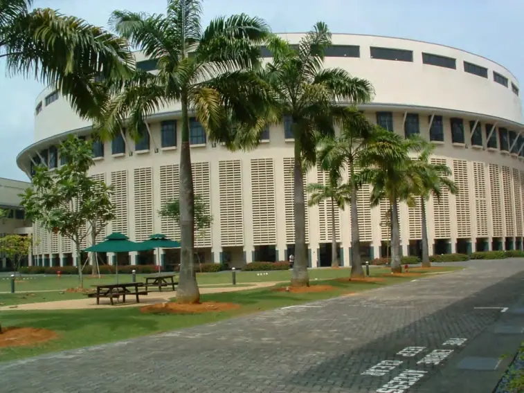
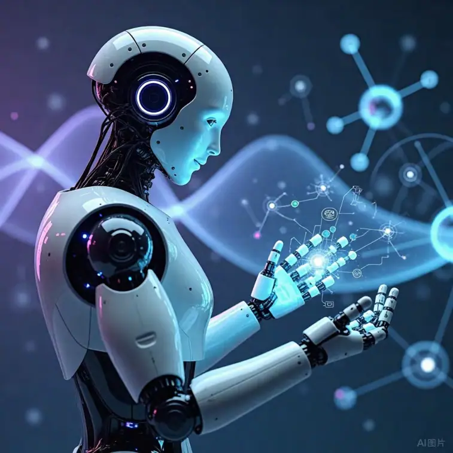
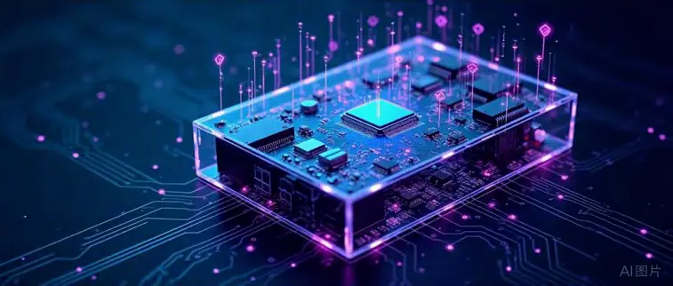

目录
前言
A. 学科SIO化的时代背景
B. 本文结构与逻辑
第一章传统认知观念的局限与挑战
1.1 传统认知观念的核心假设
1.2 传统教育观念的实践后果
1.3 当代社会对传统认知观念的反思
第二章主客互动知识论（SIO知识论）的理论基础
2.1 SIO知识论的概念与内涵
2.2 主体、客体与互动：知识的三元生成结构
2.3 SIO知识论的哲学源流与背景
2.4 传统知识论与SIO知识论的核心区别
2.5 SIO知识论对知识“本质”的重新定义
第三章学科SIO化：从认知到创造的教育变革
3.1 学科SIO化的缘起与动机
3.2 学科SIO化的核心诉求
3.3 学科SIO化的关键理念
3.4 从被动认知到主动创造：学科SIO化的转变要点
3.5 三界（现实世界、理念世界、自我世界）与学科SIO化
第四章三大SIO创造技术：AI、量子技术与VR
4.3.1 虚拟现实的特征与技术原理
4.3.2 VR场景与学科知识的情境化生成
4.3.3 互动实践：从抽象认知到身临其境
4.2.1 量子技术的基础原理简述
4.2.2 量子技术如何重塑跨学科知识结构
4.2.3 量子计算在教育与科研中的潜在应用
4.1.1 AI在教育领域的主要形态与功能
4.1.2 AI如何促进SIO知识的生成与互动
4.1.3 个性化学习与智能复合体主体
4.1 人工智能（AI）与知识跨学科整合
4.2 量子技术与知识互动的深度与复杂性
4.3 虚拟现实（VR）与高度沉浸式学习体验
第五章三大技术的协同融合：学科SIO化的技术生态
5.1 AI与量子技术的融合
5.2 AI与VR的融合
5.3 量子技术与VR的融合
5.4 全方位协同：一个整体的SIO创造环境
5.5 技术融合对于教育体系重塑的意义
第六章学科SIO化的教育实践与案例分析
6.1.1 理科：从实验室到虚拟仿真
6.1.2 工科：从机械制造到AI助力的智能设计
6.1.3 文科：从文本解读到多元互动分析
6.1.4 艺术：从灵感到跨界创新
6.1.5 社科：从田野调查到社会系统仿真
6.1 不同学科领域的SIO化实践模式
6.2 AI助力的个性化多学科融合学习
6.3 量子技术驱动的学术研究新范式
6.4 VR在课堂与科研中的综合应用
6.5 国际实践案例综述
第七章学科SIO化的深层影响：人才、社会与文明
7.1 培养智能复合型创造人才
7.2 社会创新生态与知识经济的深化
7.3 文化与理念的全球性互动
7.4 教育公平与技术鸿沟的挑战
7.5 人类文明形态的可能跃迁
第八章学科SIO化的方法论与实施路径
8.1 组织层面的改革：从课程设置到教学管理
8.2 教师角色的转变与能力提升
8.3 学生主体性的真正落实：学习者即创造者
8.4 教学评估与学习评估新模式
8.5 政策与资源保障：国家、社会与企业的协同
第九章学科SIO化的前景与挑战
9.1 技术与伦理：人工智能、量子技术与VR的风险与机遇
9.2 知识垄断与开放：SIO化时代的知识产权与共享
9.3 学科壁垒与跨学科融合的长期博弈
9.4 社会结构与文化认同冲击
9.5 面向未来的关键课题
第十章认知即创造：学科SIO化的终极启示
10.1 知识本质的再认识
10.2 主体、客体与互动的永恒辩证
10.3 人类创造力的无限可能
10.4 新时代文明的呼唤
10.5 展望：教育、社会与文明的共同进化
结语
参考文献与延伸阅读和思考
前言
A. 学科SIO化的时代背景
随着全球科技与信息革命的浪潮高涨，人类在21世纪正经历前所未有的变革时期。信息与网络技术的突飞猛进不仅改变了人们沟通和获取信息的方式，也在深刻影响经济结构、政治关系、社会文化和个人生活等方方面面。数字技术与智能化应用的普及，使得日常学习和工作早已超越了传统时空的限制：无论是线上课程、移动端应用还是各类云平台，都为个人的自我提升与团队协作提供了几乎无缝的连接通道。这意味着我们能够以更快的速度进行知识的获取、加工与扩散，也意味着学习者与教育者的角色可能开始重塑，师生之间的关系将变得更具互动性与协作精神。
然而，这种前所未有的技术冲击也带来了诸多新的挑战。知识更新的速度空前加快，大量跨领域、跨学科的新问题、新课题不断涌现，单靠传统的“学科分割”或“知识划块”式教学，已经很难有效地培养学生的综合素质与创新能力。与此同时，随着社会分工愈发精细、产业形态瞬息万变，“复合型”“创新型”人才成为企业乃至国家竞争力的关键所在。面对如此高压且充满不确定性的未来，仅依赖简单的知识灌输或单向度的学习模式，已经无法满足社会和个人的多元需求。
在此背景下，“学科SIO化”应运而生。它并不仅仅是教育工作者在技术层面的一次迭代升级，或在教学方法上的微调，更是一种从根本上思考“知识是什么”“学习是什么”的新实践。此前，传统教学常将学科知识视为一系列“块状”信息，要求学生通过记忆、练习和重复来掌握。而在一个日趋复杂与全球化的时代里，这种模式可能导致学生知识碎片化，或者缺乏跨领域综合理解的能力，难以形成真正的创造性思维。而“学科SIO化”理念则把重点放在了“知识在主体（S）、客体（O）与互动（I）过程中的动态生成”，认为只有真正把学习者与各种客观或虚拟资源结合起来，在不断碰撞和交融的过程中才能实现知识价值的升华。
值得注意的是，在各种新兴科技的助力之下，原本校园内的时间与空间限制已经逐渐被打破，学习活动可以随时随地发生，社会资源与个人探索相互补充、线下与线上融合贯通，形成一个多层次、全方位的学习生态。这不仅让学生能够更方便地获取信息，也赋予了他们更多自主权与创造机会。在很多先进地区与学校的实践中，我们已经看到了对“被动式”学习的颠覆：学生不再只是知识的接受者，更是活跃的参与者和创造者，这与学科SIO化所主张的“互动中生成知识”这一核心精神高度契合。
最为关键的是，这种基于主客互动知识论的教育变革并不止步于学习效率的提升或教学模式的推新，而是深刻地影响着整个人类社会的运行方式。学科SIO化的长期目标在于推动社会文明整体升级，让教育真正承担起塑造未来公民、培育新型生产力及综合创新力的历史重任。当每一个学习者都能够灵活运用跨学科思维，充分挖掘人机协同的潜能，并在实践中不断创造与迭代，社会的各行各业都会呈现出更加繁荣、多元与可持续的发展态势。
B. 本文结构与逻辑
本书（或本文）聚焦于“学科SIO化：从认知到创造”的主题，共分为十个主要章节，通过层层展开、循序渐进的方式，为读者呈现一个系统而多维的知识架构。具体而言：
第一，我们将从“传统认知观念的局限性”入手，揭示过去教育体系在知识观念与传递方式中的种种不足，反思为什么“知识静态化”与“被动学习”已无法再满足当代与未来的需求。这一部分既帮助读者回溯教育历史与思想演变的脉络，也为后文引出SIO知识论的核心概念奠定了理论基础。
第二，在对传统模式的反思之后，我们会深入探讨“主客互动知识论（SIO知识论）”本身的由来与内涵，梳理主体（Subject）、客体（Object）与互动（Interaction）三者之间如何交织、互塑，从而生成丰富且多层次的知识体系。这个章节不仅包含核心概念的解释，也包含与其他哲学与教育理论的对比，以便勾勒出SIO知识论的独特性。
第三，文章会具体阐述“学科SIO化”的提出与推行思路，重点解读其在教育改革与实践层面的操作框架。我们尤其关注在新技术（如人工智能、量子技术、虚拟现实）不断涌现的时代里，如何将这些技术元素与学科教育进行深度融合，以进一步增强跨学科互动、激发学生创造潜能，并促进知识的快速升级与传播。
第四，接着会引入人工智能（AI）、量子技术（QT）和虚拟现实（VR）三大技术对于教育的影响，分别探讨它们在教学实践、学科整合与知识生成方面的价值何在。在这里，我们会举出若干来自全球前沿的示例，包括AI在学习行为分析中的应用、量子计算在跨学科实验与研究中的突破，以及VR在提供沉浸式学习体验方面的优势。
第五，基于上述技术分析，本文还会进一步讨论这三大技术的协同融合，即如何在AI、QT和VR的相互配合之下，构建一个高度智能化、互动化和体验式的“学科SIO化技术生态”。这样的生态不仅改变了教师与学生的角色定位，也为学校甚至社会的教育管理方式带来全新的启示。
第六章到第八章将聚焦于实践案例和应用场景，深入剖析学科SIO化如何在理科、工科、文科、艺术及社会科学中具体落地，并通过国际上的典型实践案例来印证这条道路的可行性。与此同时，我们会就人才培养、社会创新生态以及文明形态的进化进行深入探讨，说明学科SIO化为何可能引发深远的社会变革。
在第九章中，文章将从多维度审视学科SIO化的前景与挑战，包括技术与伦理、知识产权与开放、学科壁垒与跨学科博弈，以及社会结构的深层冲击等方面。这些议题事关教育的公平与可持续发展，也牵动着未来社会的稳定与繁荣，因而需要我们在政策层面、技术应用层面以及文化层面进行统筹考量。
最后一章，即第十章“认知即创造”，则将从宏观哲学与未来文明的高度，对整个学科SIO化所代表的知识观、世界观和教育观进行一次升华式的总结与展望。我们会重新回到“知识”的本质问题，探讨主体与客体在互动中的永恒辩证，以及人类创造力的无限可能，进而唤起人们对于新时代文明形态的共同期待。
整体而言，本书（本文）力求在理论与实践之间找到平衡点：既提供了系统的概念框架与哲学根基，也给出了大量的操作经验与案例分析。通过这样多层次、多角度的讨论，我们希望帮助教育研究者、政策制定者、技术开发者以及广大的学习者群体，更好地认识什么是学科SIO化，为什么它具有如此重要的意义，又该如何一步步将其融入教育与社会的方方面面。更关键的是，我们期待引导读者跳出固有的视角，从新的思维高度去审视“学习与知识”的关系。也许，在某种意义上，学习从来不仅是获取信息，而更是一场持续的创造冒险。

第一章传统认知观念的局限与挑战
1.1 传统认知观念的核心假设
在很长一段历史时期内，主流的教育理论和实践都基于一种相对静态、客观化的认知观念：知识被视为客观世界中某种固有的“真理”或“规律”，等待人类去发现并记忆。可以将这一观念分解为以下三个隐含假设：
第一，主体与客体的相互分离。
在这种思维模式中，学生（或研究者）通常被视为独立于知识世界之外的观察者。只要主体不断地进行学习、阅读、实验或背诵，就能客观地“反映”并获取事物的真貌。该假设在教学中具体表现为：教师将知识作为一种“外在的资源”传递给学生，而学生只需努力接受与存储，便可完成学习。这样看来，学生和知识之间的互动往往被弱化或忽视，主体的能动性并没有被充分激发。
第二，学习是知识的单向移植过程。
基于这种观念，知识更多地被当作可打包传输的信息块（比如一串概念、公式或定理），教师是唯一的“来源”，学生则承担着“容器”的角色。在此期间，学生除了听讲、做笔记、记忆之外，缺少对知识背景、应用情境以及内在逻辑的积极探究。从认知角度分析，这种模式往往无法充分调动学生的大脑结构去联想、分析和创造，也使得学习目标与个人兴趣脱节，导致许多学生对所学内容缺乏真实的理解或内化。
第三，知识的稳定与可移植性。
许多人相信，一旦某种知识以文本、图表或定理的形式呈现，它就具备了相对稳定的特性，可以在不同场合、不同时代被反复使用。这种静态看法在教学设计中体现为编写统一的教材或教学大纲，然后多年不变地传递给新一代学生。然而，随着现实环境与学科前沿的不断演化，人们日益意识到知识并不会简单地保留原貌，而是在不同情境、不同文化背景及持续的创新过程中被重新阐释甚至推翻。
这种基于静态认知观的传统教学模式曾在一定时期发挥了积极的历史作用。例如，它有助于在较短时间内扩张学校规模、普及基础知识，也在近代科学和工业革命的兴起中扮演了传承者与推动者的角色。但是，社会加速演变的现时代给这种模式带来了巨大冲击。随着信息爆炸、大数据、网络协同等新形态的出现，人类处理问题的方式与面临的挑战都变得更加复杂与动态，客观知识亦不再如过去那般固化。从而使得传统认知观在“知识是什么”以及“如何学”的问题上愈发捉襟见肘。
对传统观念的日渐反思
首先，外部环境的复杂性和高变动性让人们认识到，知识需要经常“重塑”或“再创造”，而不是一次记忆后终身不变。其次，学习过程本身逐渐被理解为个体与环境、个体与他人之间持续而密切的交互，不再是简单的信息接收。最后，技术革命让人类能获得更加多维且开放的资源，这意味着知识生成的主体也不一定是仅限于教师或特定学者，AI或集体智慧同样可以在其中扮演重要角色。这一系列变化为批判和更新传统认知观带来了理论与实践的可能，也正是主客互动知识论诞生的土壤。
1.2 传统教育观念的实践后果
在上述传统认知观的影响下，现代学校制度长久以来形成了以“单向授课—测试考核”为主轴的教育实践模式。这种模式在许多国家和地区都有所体现，具体表现可以概括为以下几点：
1. 以课本为中心、以考试为终点的教学流程
学生从幼儿园到大学，大部分时间被要求在各类课程里记笔记、背知识点，并在考试中“再现”课本或课堂中学到的概念与规律。这种模式似乎保证了教学的统一性与可衡量性，但也在某种程度上压抑了学生的好奇心和创造力。由于成绩被视为主要目标，师生均在评价标准的压力下倾向于采用“应试导向”的学习或教学方式，导致许多学生在面对新问题时缺乏灵活应用与变通的能力。
2. 对学生学习兴趣和主动性的削弱
当课程的意义主要集中在通过考试或完成作业时，学习活动便容易变成机械操作或“刷题”行为，脱离了实际生活与社会发展的需求。学生更关注的是怎样拿到高分、怎样完成教师布置的任务，而非思考知识本身的价值或与其他学科的关联。久而久之，学生对于探究型、创造型的学习机会持回避或漠视态度，教师也习惯了“填鸭式”教学，在课堂上以信息的快速灌输和标准答案的不断重复为主，不利于学生形成深度思考的习惯。
3. 知识与现实生活脱节
这种教学模式往往关注“学科知识的完整性”而忽略其真实语境的应用。当学生毕业离开校园，真正面对社会与职场时，往往发现自己难以把在教科书中学到的知识与现实情境相结合。很多大学生甚至在进入工作岗位后依旧迷茫，因为他们很少真正练习或体验如何将各学科的原理融汇贯通，去解决跨领域的复杂问题。在企业或科研机构中需要的“协作意识、创新思维、实践操作”等软硬技能，很难通过死记硬背来获得。
4. 评估标准的单一与片面
传统教育通常以考试成绩来衡量学生能力。虽然这在大规模选拔中具备便利性，但也导致学习者的种种潜能被忽视。许多学生可能在艺术、社会活动、创造性思维等方面表现出色，却无法在应试评价中体现其综合素养。这种评估方式不仅对学生的多样化发展造成了限制，也使一些真正拥有创新潜力的人被埋没或不断受到挫败。
5. 学科壁垒与知识碎片化
传统教学模式强调把学科分割得非常清晰，每一门学科自成体系，难以形成交叉与融合。这样的组织方式在工业社会时代具有一定效率，但在知识经济与信息时代，问题往往是综合性的，例如智能制造、环境保护、社会治理等，都需要跨学科视角进行综合分析。因学科间缺少交流和联动，学生往往只能在本学科范围内死记概念与理论，当需要系统性或多维度思考时，却发现难以找到相应的联结点。
综上，传统教育模式在稳定知识传递、维持基础教育普及方面曾做出重要贡献，但其自身的结构性局限已不再能满足当代社会对高水平、多元创新人才的需求。也正是这些局限性，促使全球教育界不断探索改革之路，从建构主义、探究式教学到混合式学习，再到如今的主客互动知识论（SIO知识论），教育的发展脉络呼应着社会对于“如何更好地学习与创造”的迫切渴望。
1.3 当代社会对传统认知观念的反思
在过去的几十年里，面对激烈变迁的时代背景，人们对传统认知观念的反思日益深入，并主要体现在下列几个方面：
1. 理论层面的系统性质疑
在哲学与心理学层面，建构主义（如皮亚杰与维果茨基）的崛起挑战了“知识客观固定”的假设，强调人在社会互动与自我反思中建构意义的过程。社会建构主义指出，知识往往是在文化和交往情境中被共同塑造出来的，而非某种可以独立存在的客体。现象学思想则关注主观体验与意识在认识中的关键作用，揭示了体验、情感与背景对人类认知的重要影响。这些新的理论主张为主客互动知识论（SIO）打下了坚实的学理基础，使人们开始意识到，学习和知识生成不是一个机械化、线性化的过程，而是多重因素交织的复杂动态。
2. 教育实践中的新型教学模式
反传统的教育实验在各国陆续展开：项目式学习（PBL）和基于问题的学习（Problem-based Learning）强调学生在情境中主动探索，构建对知识的深层理解；STEAM教育（将科学、技术、工程、艺术、数学融为一体）鼓励跨学科融合；翻转课堂让学生从“被动听讲”转为课前自学、课堂互动。这些实践都在力图打破“以讲授与考试为中心”的陈旧结构，让学生在更多维的互动环境下动手动脑，主动地生成并检验自己的见解。
3. 信息时代对知识更新速度的高度警醒
随着大数据、人工智能、互联网的快速发展，知识在全球范围内呈现爆炸式增长与瞬时传播的特点。任何传统教科书里的结论，都有可能在不久后被新的研究成果推翻或修正。若仍旧采用“知识储备”的观念去组织教学，学生在毕业后可能会发现学到的许多技能与原理已经过时或与实际需求相去甚远。越来越多人意识到：学会“如何学习”与“如何创造”远比记住大量“现成知识”更重要。
4. 社会生产力与创造力的核心地位
现代社会的发展需要大量具有综合思维和实践能力的人才来解决复杂性难题，这些难题往往横跨理工、人文、社会、经济、政治等多个领域。传统认知观念下培养出来的“单科精英”或许能在某些专业领域取得成果，但若缺乏跨学科合作或协同创新的意识，就难以应对当代社会中涌现的各种全新挑战。对于许多国家而言，提升社会整体创造力与创新活力，已经成为竞争力的关键指标。因此，教育界必须从根本上改变对学习和知识的看法，把更多精力放在培养学生的批判性思维、灵活应变能力、团队协作与终身学习意识上。
5. 多元文化的交融与个人价值追求
在经济全球化和文化融合的背景下，学生面临的不再只是本土文化或单一社会结构的学习要求，而是多元背景、全球视野下的自我定位和发展需要。传统“知识移植”式的教育方法难以让学生形成跨文化理解、包容和适应能力。加之，在价值多样化与个人主义兴起的时代，教育不再仅仅是满足社会对劳动力的需求，还要满足个人对身份认同和自我实现的追求。若想让学生真正发现自身潜能，必须尊重他们对知识和世界的不同体验，让学习过程更加多元与立体。
综合来看，传统认知观念的“静态化、客体化”特征已被当代社会的高速演化、信息爆炸和多元价值系统所颠覆。主客互动知识论（SIO）恰恰是在对这些冲击与反思的回应中脱颖而出。它不仅吸收了建构主义、社会建构主义与现代教育技术的思想精髓，也为人类未来的学习方式勾勒出更具创造性和合作性的可能图景。正是在这样的理论与实践合流之下，学科SIO化改革得以出现，并被视为打破传统教育桎梏、迎接新时代机遇的重要道路。
第二章主客互动知识论（SIO知识论）的理论基础
2.1 SIO知识论的概念与内涵
主客互动知识论（SIO Knowledge Theory）是一种强调知识在动态生成与传播过程中的“主体—客体—互动（Subject-Interaction-Object）”三元关系的理论框架。它对我们惯常的“知识—学习”理解提出了根本性挑战，认为知识并非一个完全独立、自足的“客观事实”，也并非由主体一次性“习得”便可长久保存的静态信息；恰恰相反，只有当主体与客体之间发生持续而多维度的互动时，知识才会被“显现”或“激活”，并进入真正的创造与演化状态。
在这一思路下，SIO包含了三个关键要素：
S（Subject）：通常指学生、研究者或任何能动的认知主体，但其范畴可以扩展到某个团队、社会集体，甚至智能系统，只要它能在互动中表现出“能动性”。
I（Interaction）：是使知识“活化”与“进化”的中介，形式相当广泛，包括语言沟通、艺术表达、实验实践、技术操作、数据分析乃至情感交流等。
O（Object）：不仅可以是可触摸的物理对象、自然现象，也可以是社会制度、文化形态、概念模型或人工智能程序，只要它在互动中对主体产生影响、被主体所影响，就可以被视为“客体”。
与传统认知观相比，这种对知识“动态场”的理解带来了几个重要启示：第一，知识的形成更多地依赖过程和情境，而非固态的信息储存；第二，知识的真义不在于它被主观或客观地“反映”，而在于它如何在不同的环境及时间维度里显现并不断被重构；第三，主客互动在这里不是可有可无的补充环节，而是知识存在的核心载体。失去了互动的环节，许多所谓的“知识”也就失去了活性与意义，沦为纯粹的符号或记忆片段。
对教育而言，SIO知识论展现出颠覆性的力量。过去我们往往把知识当作“可以收纳在脑海或课本里的实体”，但SIO视角告诉我们，这种静态的记忆并不代表真正拥有了“活的知识”。只有当学生在与环境、设备、同伴、教师或社会情境展开真正的互动时，知识才会被激发出来，并在不同主体间实现多方向的流动、再创与碰撞。也正因为如此，SIO知识论被视为开启了对学习和教学观念的崭新理解，为教育变革提供了强而有力的理论基础。
2.2 主体、客体与互动：知识的三元生成结构
SIO知识论提出的三元生成结构可以视为一个动态的“生态系统”，其中主体（S）与客体（O）通过丰富的互动（I）不断塑造并转化对方，从而生成新的认知、经验与成果。此处需强调几点：
1. 主体的多样性
在传统教学模式下，主体往往是指一个学生或一个研究者，然而在SIO框架中，主体可以由不同个体合并而成的学习共同体，也可能是师生、科研团队、行业联盟，甚至是人机协同主体（如学生+AI助手的组合）。只要这个“主体集合”能够在互动过程中展现合意志或合行动力，就能够在知识生成中发挥核心功能。这也意味着学习不再是孤立的个体过程，而是可能在更宽广的合作网络中完成。
2. 客体的多层次性
一般提及“客体”，人们容易联想到实验仪器、自然现象或课本知识体系；但在SIO理论中，客体范围更加宽泛。它可以指社会规律、文化文本、理论模型，也可以指非物质化的事物（如观念、精神或虚拟环境）——只要在互动场中对主体产生影响或被主体改造，就可被视为客体的一环。比如，在文科研究中，历史事件、文学作品、社会结构等都可以成为客体；在艺术教学中，艺术作品、灵感素材、观众反馈也都是客体元素的一部分。
3. 互动的多维度与过程性
互动（Interaction）并非只有面对面讨论或实验操作，还可以包括线上协作、模拟仿真、身体体验、情感共振、批判对话等多种层次。一个“互动事件”往往不是一次性的，而是多轮、持续的过程：学生可能在一次观察、实践或思想冲突中获得启示，随后深入思考或与他人交流，再进一步在行动中验证或修正自己的想法。如此往复，知识也就随着这些迭代在不同主客体之间不断流动、转换并升级。
通过这一三元生态模型，我们可以更好地理解为何知识并不静止：客体因为主体的操作和诠释而改变了外在形态或被赋予新意义，主体也因客体所释放的信息和价值观而更新了思维模式或情感态度。与此同时，这些变化必须通过互动来完成，互动可以是语言、行为、数据处理或艺术创造等多样形式。总之，SIO知识论下的学习过程不再仅仅是“学生记住知识点”，而是主客双向塑造、交替推进，进而在协同中不断发生成果的新版本。
2.3 SIO知识论的哲学源流与背景
SIO知识论并非凭空出现，在哲学、社会学、心理学等学科的思想史中，能找到多条与之相通的渊源：
1. 现象学及其对“主体—世界关系”的探讨
胡塞尔的现象学强调意识与世界之间不完全是分离的镜像关系，而是相互作用与构建的过程。海德格尔进一步关注人在“此在”状态下对世界的领悟，认为人并不是被动地接受外界信息，而是通过实践与体验赋予事物意义。SIO知识论继承了现象学对“主客交融”的关切，认为当主体与客体发生互动时，才产生了知识的真实显现。
2. 后现代主义对“唯一真理”的解构
利奥塔、福柯、德里达等后现代思想家提出了知识多元性的观点，认为所谓的“真理”或许只是一种时空条件下的话语构建，缺乏永久的、普适的绝对性。这种思潮在一定程度上启发了SIO知识论对于知识的“过程化”与“情境性”理解，即知识更多是一种关系网、一种实践性场域，而非独立于人类活动的客观体系。
3. 建构主义与社会建构主义对学习的动态阐释
皮亚杰（Jean Piaget）的个体建构主义、维果茨基（Lev Vygotsky）的社会建构主义都强调了知识生成离不开个体的主动构建和社会文化的背景。皮亚杰认为，儿童通过同化与顺应的活动来内化外部刺激，从而逐步建构认知结构；维果茨基则凸显了语言交流、社会互动对儿童思维发展的关键作用。SIO知识论吸收了这些理论的精华，承认主体的创造性以及社会互动对知识拓展所具有的决定性意义。
4. 当代科技与信息社会思潮
在大数据、人工智能、区块链等新技术的加持下，知识正以前所未有的规模和速度被生产、扩散与修正，人们越发意识到知识的可塑性、网络性和分布式特点。这些特征与SIO知识论所强调的“关系化”“过程化”“互动性”高度契合，为其提供了新实践场景与实证案例，也展示了传统知识论模式所面对的深刻挑战。
综上所述，SIO知识论并不是简单地将“主-客-互动”拼凑起来，而是在对诸多前沿哲学、社会学、心理学与技术进化的洞察基础上，融合并升华了“知识是如何产生与变动”的关键问题。它试图让人们打破对知识作为固定成果的迷思，从而把握到知识在时代变迁和具体实践中的“自发生成”动力。
2.4 传统知识论与SIO知识论的核心区别
为了更清晰地对比SIO知识论与传统知识论，我们可以从以下几个维度展开：知识本质、主体地位、客体地位与互动角色。
1. 知识本质
传统知识论：知识被设想为客观存在的真理或事实，可以通过合理的方法或实验来发现并“储存”。
SIO知识论：知识是主客体交互时的一种动态构建或网络结构，它因互动而生，也会因互动环境的消退或改变而衰减、转化。
2. 主体地位
传统知识论：学习主体常被视为信息的接收器，通过努力记忆和思考来“复制”或“映射”客观世界。
SIO知识论：主体是知识创造与意义构建的积极参与者，既能“吸收”客体提供的资源，也会主动改造客体，在多层次互动中持续生成新的认知与行为模式。
3. 客体地位
传统知识论：客体被视为相对被动、独立且客观的存在，学习者只能发现其客观规律或属性。
SIO知识论：客体在与主体的交互中展现出多重面向，既可能是被理解与改造的对象，也可能“反向”影响主体的思维与行动。双方相互塑造，没有哪一方永远居于绝对固定的地位。
4. 互动角色
传统知识论：互动往往被当作学习过程的附属环节或手段，重心仍是知识传递与接受。
SIO知识论：互动是知识产生与发展最核心的动力。如果无互动，知识只能停留在静态、孤立的文本或数据层面；一旦融入多方交流或实境体验，才会成为真正的“活知识”。
正是因为这些根本差异，SIO知识论在教育研究与教学改革中被视为“革命性”的理论，可为新形态学习活动（如跨学科项目、沉浸式体验、科研实践、社会服务等）提供理论基础，让教学者更自觉地规划与设计主体—客体之间的多维度互动。
2.5 SIO知识论对知识“本质”的重新定义
综合前文论述，SIO知识论对知识的重新定义可以概括如下：知识不是纯粹的、可被无限复制的信息块，也非仅存于书本或专家头脑中的静态财产；它更像一个在“主体-客体-互动”网络中持续流动、演化与形塑的“复合体”或“场域”。在具体条件（时间、地点、技术、文化等）的影响下，它不断被个体与社会实践所激活、检验与再生，从而展现出高度的复杂性与情境性。
1. 动态性与过程性
知识不再被视为一成不变，而是在使用与对话中持续升级或改变。随着外部环境的变化、主客关系的变更，以及内部思维的深化，同一知识主题也可能焕发出新的意义或被重新阐述。
2. 情境依赖与社会化
知识需要在具体情境或实践中才能被看见其价值。孤立于情境之外，许多抽象概念只是一堆符号，唯有在交流、合作、探究、建构等互动过程里，知识才能发挥功能。尤其是在数字社会的协作环境中，知识的社会化特性愈发明显，它往往同时存在于团队头脑风暴、技术工具辅助和多元文化碰撞之中。
3. 主体体验与能动性
SIO观点重视个体体验，强调知识在个体层面的内化与加工。如果学生仅仅是背诵或抄录概念，那么这一概念对他来说几乎没有功能性意义。只有当学生以主体身份亲自参与或探究，触发与客体之间的交互，并能主动整合与改造这些信息时，知识才真正被“学会”或“掌握”。这为教育设计指明了方向：不能单靠灌输，而应通过丰富多样的活动、技术与社会环境来引导深入体验与思考。
4. 时空与技术条件的塑造
随着时空条件改变，或随着新技术出现，原本“约定俗成”的知识也会被检验、修正甚至颠覆。例如，网络化环境让人们能跨地域地共享数据与思考，在无数次的对话和协同中挖掘出新洞见。VR、AI等技术可提供更加沉浸式与智能化的互动场景，令主体与客体之间的关系发生深刻变革。因此，SIO知识论也预示着我们对教育、科研乃至社会组织方式进行重大调整，以适应知识新形态的爆炸式迭代。
总的来说，这种“生成-交互-演化”的观念，重新定义了学习者与知识、环境三者的关系。其意义在于帮助教育、企业管理、社会创新等领域摆脱“知识静态化”的局限，把重点放在“如何设计能量和信息流动的场”，让更多的人在互动中共享灵感与成果，激发出更大规模的集体智慧。在这一框架下，要想让学生真正掌握并运用某一领域的知识，必须要持续地提供真实情境下的互动机会，让他们在一次又一次的体验中“看见”并“内化”知识的多重面向，最终达成深层次的学习和创造。

第三章学科SIO化：从认知到创造的教育变革
3.1 学科SIO化的缘起与动机
学科SIO化之所以在当代社会备受关注，很大程度上源于人类面临的挑战已远超传统学科分科教育所能应对的范畴。我们正处于一个高不确定性且高度跨学科交织的时代：从气候变迁、环境污染、公共卫生，到数字经济与人工智能的兴起；从复杂供应链管理、大数据分析，到社会治理与文化多样性维护，都体现出单个学科或“分科知识”难以独自解决这些多层面的问题。
1. 跨学科融合的迫切需求
气候变化与可持续发展：要治理气候危机，既需要气象学、地理学、经济学、政治学、社会学等多学科协作，也需要把公众教育、文化价值观改变纳入考量。若我们依然停留在传统的“单学科拆解”，学生可能只懂物理或化学原理，却对环境政策、伦理约束和社会动员方式一无所知。
智能制造与数字经济：现代制造业面临的不仅是技术问题，还包括供应链优化、全球贸易、法律合规以及企业文化、员工技能再培训等多层要素。只有跨学科背景的人才能整合工科、经济学、人力资源、法律等多方面知识，为企业创新提供更高视野与更加务实的方案。
公共卫生与社会管理：从流行病学到社区医学，从数据监测到心理辅导，从疾病预防到全球协作，都是跨学科互联的过程。真实世界的公共卫生挑战往往是社会、文化、经济、政治等多种因素同时作用的结果，不能简单依赖某种单一技术手段。
2. 对“创新型人才”的需求不断提高
社会和企业越来越需要能综合运用多学科知识，并且具有系统思维的人才。这类人才既能在技术维度或科学维度上钻研核心原理，又能在社会、经济、文化层面与不同领域的专家或公众高效沟通；他们更需要具有主动探索、持续学习的能力，能够根据情境变化快速调整思路并提出原创性的方案。传统的知识点灌输模式往往生成“知识记忆者”，而非“知识创造者”，难以满足企业和社会对创新型人才的旺盛需求。
3. 学习者对个性化与探究性学习的渴望
随着数字化与移动互联网时代的到来，学生从小便可接触到比过去更多元、更广阔的信息与世界；他们自然地会对单调、僵化的教学方式产生排斥。许多年轻人希望能在学习中发现自己的兴趣点，能与真实生活产生关联，也更愿意在社群或实践项目中合作与碰撞，而不满足于简单地背诵知识点参加考试。学科SIO化正是回应了这种新生代学习者对体验式、互动式、创造式学习的期待。
在这一背景下，“学科SIO化”应运而生，带来一种全新的教育思维：学科并非仅仅是知识点的聚合，而是一个持续、动态的“生态场”，不断跟随社会需求与技术变化而成长。比如，在一个基于SIO化理念的“健康科学”课程里，学生不再只学解剖学、营养学等书本知识，还会跨界了解心理学、社会学、统计学、政策研究，并且通过社区调研、医院实习、线上健康平台的数据分析与AI助手的协作来开展“系统性项目”。这种大跨度的融合，正是为了培养学生对真实问题的多维度掌握与创新能力，也正是学科SIO化的主要使命。
3.2 学科SIO化的核心诉求
学科SIO化并不只是简单地为原有的学科包装上一层“跨学科”外衣，也不仅是让教学更“活泼”或“有趣”而已。其核心诉求深嵌于教育哲学与社会实践之中，主要表现在以下几个层面：
1. 注重知识的生成性
从知识传递到知识创造：在传统教学中，教师把学科内容划分为若干章节，学生逐一学习并背诵；然而学科SIO化更强调“过程式”的知识生成。例如，在一个地理与历史综合项目中，教师鼓励学生研究本地古城的演变过程，让学生亲自收集地质与人文资料、实地走访老街，通过交互式地图与访谈记录加以分析。这一系列行为并不只是“查资料”，更是创造新的理解与多学科视角，学生在活动中获取了比课本更丰富的收获。
教师与学生共同建构：学科SIO化要求教师与学生形成共同体。教师不仅仅是“知识的灌输者”，更是引导学生思考、激发学生灵感的“协同创造伙伴”。比如在项目进行时，教师可以抛出关键的问题或设置模拟情境，引发学生的思考和讨论，让学生在自发找答案、撞思路的过程中构建对课题的“动态认识”。
2. 强调跨学科和跨领域的融合
现实问题往往交织多学科要素：现代社会问题有社会、经济、政治、科技等多重层面，如果教育只注重单学科知识，就会出现“各学科零散且互不连通”的现象，使得学生难以从整体视角看待问题。学科SIO化推动在课程设计中就预留跨学科合作空间。
培养系统思维：与“跨学科”相伴而生的是系统思维的养成。学生在某个项目中同时运用数学模型、物理原理、经济分析和社会调查方法，才能更好地应对现实挑战。当他们毕业走上职场或科研岗位时，也具备了在多学科信息之间“快速切换”并做综合判断的能力。
3. 倡导学习者主体性的觉醒
摆脱被动学习的藩篱：长久以来，学生在课堂上习惯了被动听讲、做笔记、完成练习，导致许多学习内在动力被消磨。SIO化鼓励学生跳出这种模式，成为学习过程的“设计者”和“实践者”。
自我迭代与个性化发展：在学科SIO化课程中，学生时常被鼓励去尝试不同维度的探究，发现自身兴趣与潜力所在；他们也可根据个人方向进行更深入或更广泛的延伸学习，形成个性化的学习路径。这不仅仅是一种对学生自由度的放宽，更是对他们独立思考与选题能力的培养。
4. 追求教学过程的情境化和动态性
从“死知识”到“活知识”：如果知识只存在于课本条目之中，那么它与学生的现实生活、心灵体验就可能脱节。SIO化通过设置真实或模拟的实践情境，比如虚拟实验室、社会调研项目、跨学科工作坊等，让学生在互动中理解概念、验证假设并即时修改自己的认知。
反思与试错的重要性：SIO化认为，真实的学习并非一次就能到位，而需要在反复试验、失败与修正中推进。例如，一个编程与数学融合的项目式学习中，学生可能反复调试程序、检验算法误差、与组员讨论优化策略，这种持续迭代远比一次性记住某个公式更能锻炼创造思维和团队协作能力。
通过满足上述核心诉求，学科SIO化在根本上改变了学生对学习与知识的态度：不再是“老师给什么我就学什么”，而是“我能在与世界、与同伴及工具的互动中发现、创新与演进”，真正实现对未知领域的好奇心与研究欲望的培育。
3.3 学科SIO化的关键理念
要让学科SIO化的理念落到实处，并非在课程大纲中简单标注“跨学科”或“项目式”就能奏效，反而需要一系列清晰且可操作的关键理念来统摄教学设计与实践。以下四个理念起到至关重要的统领作用：
1. 以互动为核心
多方参与、深度对话：教学活动不仅包含教师和学生之间的互动，也应纳入社会资源、数字平台、行业专家、乃至AI系统。当学生参与访问工厂车间、运用AI进行数据处理或和远程国际专家连线交流时，学科边界会在动态对话中被重新定义，学生的视野得到拓展。
实践案例：沉浸式语言学习：以外语学习为例，在SIO化背景下，教师可将真实场景（如模拟海关、模拟商场购物、与外国学生在线交流）融入课堂，让学生在互动中“体验”语言环境，而非仅背单词、做试卷。学生对外语的理解与运用能力也会因此更牢固、更灵活。
2. 跨学科连通性
打破学科篱笆：无论是高中阶段的数学与物理、化学与生物，还是大学阶段的人文与社科、工科与管理，许多原本相对隔绝的学科彼此之间都有内在的接口。
实践案例：STEAM工作坊：当美术、编程、物理和设计思维被组合在一起，学生可以在一个项目中学习电路原理、机械结构，也能发挥艺术创意。当他们动手做一个LED灯光展示的艺术品时，不仅需要物理知识来连接电路、数学知识来计算电阻，也需要艺术审美和编程技巧来编排灯光序列，让作品更具有创意和观赏性。
3. 主体创造性
鼓励学生质疑与表达：在许多传统课堂中，学生害怕提出问题，怕错、怕被嘲笑。而学科SIO化倡导鼓励质疑甚至挑战教师或权威的观点，让学生真正成为知识探究的“主动玩家”，在辩论和批判思维中形成自我见解。
实践案例：学生自拟研究课题：在大学或高中阶段的研究性学习课程里，教师不再指定唯一选题，而是让学生根据兴趣自选主题（例如，“当地水资源生态调查”“共享经济对城市交通的影响”“校内废物处理可持续性方案”等），并在教师指导下制定研究方案、开展调查实验并撰写报告。这个过程就是典型的学生主体创造性发挥。
4. 三界统一：现实世界、理念世界、自我世界
现实世界：强调与社会、自然、产业的接轨；避免“学习为考试而学”，而是面对真实情境来锻炼解决问题能力。
理念世界：强化理论抽象、逻辑推理和知识系统化，在实践中倒推对概念框架或模型的建构与修正。
自我世界：注重学生的情感、信念和思维模式，激发内在动机，让他们在反思和自我认识中不断成长。
实践案例：公益项目与学科融合：学生在社区服务或公益项目中，可能面临与当地居民沟通、设计问卷调查、分析数据、撰写报告等多个环节。这既锻炼了他们对现实世界的适应和责任感，也需要理念世界里的数据处理、社会学理论知识，还涉及自我世界的价值判断，如同理心与社会责任感等。从而达到三界彼此联动的教学效果。
3.4 从被动认知到主动创造：学科SIO化的转变要点
想要真正把学生从传统“被动认知”模式转向“主动创造”模式，需要在教学生态链上进行深层次的改革。这不只关乎课堂教学法的调整，也和学校的管理制度、资源分配、教师角色、评价机制等密切相关。
1. 重新定位教师与学生的关系
教师从知识灌输者变为引导者：教师主要任务变成“设置情境”和“营造氛围”，并给予学生适度的支持、反馈与激励。例如，在一个跨学科项目中，教师要事先构思好真实社会或行业中的难题，引导学生前期背景调研，并在团队合作中适时协助他们克服概念或技术障碍；但不再把所有知识点一次性讲完，而是留出探索空间。
学生从知识接收者变为探究者：学生要学会对未知领域保持好奇心和研究精神。比起“作业完成”，他们更重要的目标是探索如何提出问题、如何找到合适的方法、如何与团队成员分工、如何及时反思并修正误区等等。通过这种角色变换，学生渐渐发现他们能够为学科增添新见解，也能带动同伴的成长，而不是被动等待教师“给答案”。
2. 改变课程与教学设计
项目式学习与任务驱动：代替分科式、章节式、碎片化的知识传授，许多学校开始采用“项目式学习”（PBL）或“基于问题的学习”（PBL）作为教学主线。这些项目大多打通了多门学科，如一项“校园环保计划”就可以融汇生物、化学、经济、艺术设计与社会调查等多个学科。
使用真实或高仿真案例：课堂中引入来自企业、社区、科研机构的真实问题，或在VR技术辅助下模拟逼真的情境，让学生在身临其境的氛围里尝试、对话和创造。这极大提高了学习的趣味性和实践价值。
3. 调整评价与考核方式
多元评价取代一次性标准考试：在SIO化的理念下，学生的过程性表现、团队协作、创新思维、反思深度、项目成果等都应纳入评价维度。例如，可以采用学生自评、同伴互评、教师评价、专家评审等多种方式，结合量化与质性指标来综合衡量学生的学习过程与产出。
鼓励错误与迭代：与“标准答案”文化不同，SIO化倡导“试错”和“迭代改进”，因此评估更注重学生是否能从失败中汲取经验、是否具备持续完善方案的能力。这样能有效培育学生的探究精神、韧性与创造性。
4. 在学校与社会层面形成支持
与外部机构合作：不少推动学科SIO化的学校会主动寻求与大学实验室、科研机构、企业或社会组织的合作，把实际项目引入校园，让学生获得现实问题的磨炼；企业或高校专家也可参与指导和评审。
技术与资源配套：为了实现真正的互动学习和跨学科实践，学校需要配备一定的空间、设备与数字化平台，例如创客空间、VR实验室、在线协作平台、AI计算环境等。如果设备或管理不到位，可能使许多有潜力的项目无法落地。
通过这些转变要点的落实，学生在学科SIO化的环境中能够获得高度的学习参与感与创造热情，教师也会在更大程度上重塑自身价值，从原先知识的“输送者”变成学习社区中的“牵头人”与“激发者”。
3.5 三界（现实世界、理念世界、自我世界）与学科SIO化
三界（现实世界、理念世界、自我世界）的概念在主客互动知识论（SIO）中扮演着核心角色，也成为学科SIO化理念在教学实践中进一步深化的抓手。其主要意义在于：
1. 现实世界：可实践、可检验、可共情
联系实际问题：通过观测、实验、社会调研或实践项目，让学生在应对具体难题的过程中学习知识。例如，地理课不仅讨论地貌分类，还动员学生到社区或山野进行观察测绘、收集气候数据，对当地水土流失现象进行调研并提出改良建议。这种做中学的过程，能让学习者切实体会到理论和现实之间的因果互动。
与社会和自然环境紧密互动：学生更容易在真实世界中找到学习的动力，也能通过真实情境理解知识的实际效果和局限性。社会活动、义务服务、行业实训等都是将现实世界融入课堂的常见途径。
2. 理念世界：抽象、推理、建模和理论升华
让理论与实践相辅相成：在把握了现实情境后，学生需要借助理念世界中的理论模型、科学原理或概念体系来解释所见所闻，并进行抽象推演。比如，在探究“城市交通拥堵问题”时，学生会调研市内交通流量数据、访谈市民需求，然后回到理念世界利用数理模型或管理学理论进行分析，甚至提出算法模拟。
打破“背理论”的刻板印象：通过与现实世界的来回对照，学生理解到理论并非脱离生活的存在，而是帮助我们分析复杂现象、提出合理假设、检验假设并做出预判的有力工具。
3. 自我世界：情感、价值观与自我认知
内化知识价值：学生一旦经历了现实世界与理念世界的碰撞，也会在自我世界中对知识进行个人化的吸收与反思，这可能涉及到他们的兴趣、职业规划、人生观等更深层面的思考。
培养自省和批判精神：当学生掌握了一定的领域知识与技巧后，更关键的是引导他们回到自我世界，反问自己：“这项研究能带来什么影响？”“我对这个议题的情感或价值判断是什么？”“我的学习和未来职业能否带来社会福祉？”这样的自我拷问有助于培养有社会责任感、富有人文情怀与伦理意识的新一代公民。
4. 三界交织的典型实践：
社区参与项目：学校与社区合作，让学生在现实世界中调研社区健康、环境、公共设施等情况；然后利用理念世界里的数据分析、政策理论或经济学原理来规划解决方案；最后，学生对个人在项目中的成长、责任分配、团队合作成效进行反思，从而在自我世界中内化经验。
科艺融合创作：在艺术与科技相融合的课程中，学生既要现实地动手建造或编程（现实世界），也要利用数学、物理或美学原理（理念世界），并将个人情感或艺术表达需求（自我世界）融入作品。如设计一个能随音乐频率变化而生成3D视觉效果的装置，需要将艺术审美、信号处理算法、物理结构设计以及个人创作意图结合起来。
由此可见，三界的交织让学科SIO化不仅仅停留在知识传授层面，而是对学生进行多维度的人格与能力塑造。现实世界带来真实问题和动机，理念世界提供深层推理与知识架构，自我世界激发内在情感与价值反思，三者如同三股绳索，在学生的成长过程中相互缠绕、彼此支撑，才让学习变得真正有活力和意义。
小结
“学科SIO化：从认知到创造的教育变革”所强调的并不仅仅是课堂形式的华丽转身，而是对“什么是知识、为何学习、如何学习”的系统性再思考。在社会高度复杂化和不确定性增强的今天，只有通过主体—客体—互动的全面联结，以及跨学科融合、创造性激发、三界统一等核心理念的贯彻，才能把学生从被动的知识接受者培养成有批判力、有创造力、能在多领域交互中不断进化的未来公民。
这一过程既需要宏观层面的政策支持和教育体系改革，也离不开教师在一线教学中的实践与创新，更离不开学生与社会的共同合作和理解。在这样一幅宏大图景里，SIO化既是对当下应试教育困境的积极回应，更是对未来教育形态的生动想象：当每个学科都成为彼此间的开放系统，当每个学生都能在互动中发现自我与世界的无限可能，我们才能真正体验到教育从“认知”转向“创造”的巨大潜能与价值。

第四章三大SIO创造技术：AI、量子技术与VR
4.1 人工智能（AI）与知识跨学科整合
4.1.1 AI在教育领域的主要形态与功能
随着深度学习、自然语言处理和大数据分析等技术的快速发展，人工智能在教育中的应用早已不止于简单的测验批改或在线答疑，而是逐渐在“教、学、管”三个层面发挥越来越全面的作用。
1. 自适应学习平台
核心理念：借助AI对学生学习行为的实时监测（题目完成率、答题速度、错误分布等），动态调整教学内容的难度与呈现方式，为每位学生打造“个性化”进阶路径。具体示例：一些数学自适应学习平台，在检测到某位学生在某类几何题上频繁卡壳后，会在后续推送相应的微课、例题解析或难度逐步上升的针对性训练题，让学生通过循序渐进的模式建立稳固的知识结构。
2. 智能搜索与内容推荐
AI可快速整合海量电子书、期刊论文、在线课程资源，按照学生当前兴趣或课程需要进行个性化的推荐。
例如，高中阶段的历史学习过程中，AI可以基于学生的兴趣（如近代史、世界史），自动推荐相关的文献、视频或在线讨论社区，让学生在“学科资源库”中自由探索。
3. 情感与行为识别
借助计算机视觉、语音识别等技术，AI可以洞察学生在学习过程中的面部表情、语气变化、注意力集中度等，从而在课堂中帮助教师判断学生的学习状态与情绪；在在线学习环境中，也可提供实时的预警或关怀。
例如，一些系统在侦测到学生多次长时间停顿或低头不语时，会主动发出提示或抛出辅助性问题，帮助学生从疑惑或疲倦中跳脱出来，重新投入到学习环节。
4. 智能教学管理与数据分析
学校层面可以利用AI对大规模教学数据进行整合和分析，从而帮助管理者了解整个年级或学校在特定学科上的优势与薄弱环节，为后续的课程规划或教师培训提供更多决策依据。
通过这些形态与功能，AI在教育系统中扮演的角色不再局限于简单工具，而更像是“智慧助理”或“共创伙伴”，与学生、教师一起推动教学质量与效率的提升。
4.1.2 AI如何促进SIO知识的生成与互动
在SIO知识论看来，人工智能不仅是信息传递的媒介或统计分析的工具，还是一种能动的“参与者”。当AI系统与学生、教师及外部环境形成交互时，新的知识结构和跨学科洞见往往能快速诞生。
1. 高速检索与多维度关联
一个具备自然语言处理能力的AI系统，可在几秒钟内检索海量文献、数据库或知识图谱，为师生提供跨学科关联的关键点。例如，学生在学习环境科学时提问“我们如何将人工智能算法应用于城市空气污染预测”，AI不仅能检索到计算机科学方面的神经网络方法，也能给出环境科学领域的关键数据集，还能为社会学视角（如公众参与、政策干预）提供建议。
这种“整合式搜索”会将平时散落在各个学科中的信息串联起来，极大促进学生对问题的系统性理解。
2. 师生与AI的协作式探究
当师生在研究性学习或项目式学习中遇到复杂问题，需要多个学科知识或大量数据信息的支撑时，AI可通过算法分析、可视化呈现等方式辅助他们做决策或提出改进建议。
例如，在智能城市规划项目中，学生需要运用城市地理、交通工程、社会学的知识设计一个智能交通方案；AI可实时模拟多个参数（如人口分布、车辆流量、公共交通线路等），让学生在交互式平台上“尝试”不同策略并看到仿真结果，最终形成更成熟的方案。
3. AI作为对话主体与知识生产者
部分先进的AI（尤其是大规模语言模型）已经能在一定程度上生成新的文本与观点，协助人类进行初步创作或科研思路拓展。学生在与AI对话的过程中，既能获得启发，也能对AI的生成内容进行批判审视，从而催生出新的发现或想法。
这意味着人机之间的协同关系并非一味地“机器做辅助，人类做决策”，而是机器在不断“进化”并产生可供人类探讨的新思路，为SIO式学习带来更多惊喜与挑战。
通过以上互动机制，AI与人类共同形成一个“人机复合主体”，在主客持续交融的过程中不断创造新的知识形态，展现了SIO理论下知识“动态活化”的深层魅力。
4.1.3 个性化学习与智能复合体主体
AI推动的个性化学习已经成为教育领域的重要话题。在过去，教师往往只能针对全班统一进度和大纲，而难以兼顾每位学生的个体差异和兴趣领域；借助AI的自适应与推荐能力，这种差异化需求得到大幅缓解。
1. 学习路径个性化
系统会根据学生的实时情况（进度、水平、兴趣）做出自动化的路径规划，不同学生可获得差异化的教材、练习形式、扩展阅读或多媒体内容。例如，一名语文水平较高但数学基础薄弱的初中生，可以在同一天里接受比同龄人更深入的文学赏析指导，同时对数学部分做更基础或更引导式的练习，以便稳固概念。
2. 智能复合体主体的形成
当SIO理论将教师、学生、AI三者视为“共同学习体”时，学习不再只是单个主体或两者间的对话，而是多主体联动。
例如，教师制定项目大纲并作初步示范，学生基于自身兴趣在AI的辅助下查询、讨论、生成思路，随时向教师或AI提问并获得反馈；AI再通过对师生的交互日志、作业结果进行学习，改进自己的分析与建议能力；教师也根据AI对班级整体的评估结果来调整教学策略。这种三方循环互动使知识在动态网络中生长、升华，最终形成一个“复合体”的集体创造力。
正是在这些跨学科、多主体、动态反馈的互动中，学生在“个人化”“跨学科整合”与“社会化”的多重维度上都获得了成长，实现了SIO知识论所倡导的深度与广度兼具的学习体验。
4.2 量子技术与知识互动的深度与复杂性
4.2.1 量子技术的基础原理简述
量子技术源于量子力学对微观世界的独特描述：粒子可以同时处于多个状态（叠加态），多个粒子间可以通过量子纠缠产生瞬时关联，而测量行为本身可能改变系统状态（不确定性原理）。这些乍看神秘的性质为科学与技术带来了全新的思路。
1. 量子计算
核心在于使用量子比特（qubit）来并行处理信息，一个qubit可同时表示0和1的叠加态，n个qubit就可呈现2^n种状态。因此量子计算机具有指数级并行能力，理论上可以在某些问题（如大规模优化、密码破解、分子模拟）上远胜传统计算机。这一革命性潜力也对教育和科研提出了新需求：学生需要跨越物理、数学、计算机科学等学科的边界，理解量子力学的概念与算法思想，才能更好地运用量子技术进行创新探索。
2. 量子通信和量子测量
除了计算领域，量子通信利用量子纠缠和不可克隆定理等特性，实现了极高的保密与干扰检测机制；量子测量则可能在传感器领域带来超越经典极限的灵敏度。
这些新技术并非只有“科学家才能理解”，也可以在普及性教育中通过模拟实验或演示装置，引导学生对传统二元逻辑、线性思维方式进行反思，鼓励他们接受非线性、不确定以及多元的世界观。
4.2.2 量子技术如何重塑跨学科知识结构
1. 量子与材料、生物、信息交叉
在材料科学中，量子效应可能带来超导、超流、拓扑材料等新领域，学生若想真正理解这些材料的特性，需要兼顾物理理论、化学反应机理以及实际应用场景。
在生物学领域，量子生物学研究光合作用、酶反应时会发现量子隧穿或纠缠效应可能在分子层面发挥关键作用。
量子信息科学连接量子力学与计算机科学、密码学等，极大拓宽了学生对信息安全和并行处理的思考视野。
2. 对哲学与社会科学的启示
量子纠缠与不确定性原理在哲学层面引发了对“客观性”与“可观测性”新的争论，也启示社会学者用非线性思维研究群体行为、社会网络等复杂系统。
学科SIO化正好提供了框架，让文科或社科学生从量子理论中汲取方法论启示，与理科学生进行对话交流，从而在观点交汇中产出更具深度的理解。例如，对社会现象的多重叠加态思维，可促使研究者意识到社会行为往往存在多种可能性并行且相互纠缠，需要在不同条件下做动态预测。
3. 教育层面的实验与项目
一些顶尖大学或科研机构已经开设了量子计算本科课程或项目，鼓励学生在早期接触量子算法、编程接口和仿真平台，通过与真实量子计算硬件（或云端模拟器）的互动来学习如何处理极其复杂的数据集。
K12 阶段的学生也可参与简易的“量子概念启蒙” ，如玩量子棋（QuantumChess）或量子小游戏，通过视觉化的方式感受“叠加态”“测量坍缩”等抽象原理，这不仅锻炼逻辑思维，也能培养创造性想象力。
4.2.3 量子计算在教育与科研中的潜在应用
1. 大规模模拟与跨学科协同
在医疗、材料、气象等需要海量计算的领域，量子计算可帮助研究者更快地筛选分子结构（新药研发）或模拟气候模型（气候预测），这就要求学生具备系统思维与多学科背景，理解数据来源、计算过程与结果解释。
学科SIO化的项目式学习可将量子模拟嵌入其中，组建跨学科团队：计算机方向学生负责量子编程，化学或生物方向学生提出分子筛选目标，数学建模方向学生设计算法流程，教师和科研人员做咨询与指导。
2. 量子思维对教学设计的影响
不仅量子技术本身在革新，量子思维——强调“不确定”“并行”“纠缠”等概念——也可以激发师生对学科传统认知的再反思。例如在社会科学中，引导学生思考是否可用非线性方法、更灵活的决策模型来理解社会行为，让他们打破线性归纳的惯性思维，从不同主体的交互与纠缠中去理解社会现象的多层次与潜在可能性。
通过量子技术与量子思维对教学内容与手段的影响，我们看到，量子技术所带来的不仅是计算能力的飞跃，更是对知识观念的再造，让学生、教师、科学家在新层面上体会主客互动的深邃与奥妙。
4.3 虚拟现实（VR）与高度沉浸式学习体验
4.3.1 虚拟现实的特征与技术原理
虚拟现实（Virtual Reality，简称VR）指的是借助高性能计算机、头戴式显示器、传感器等设备，为用户构建具有沉浸感和交互性的三维数字世界。其显著特征在于“临场感”与“交互性”：使用者可以以第一人称视角进入模拟环境中，感受空间维度、物体位置、材质变化等多重细节。
1. 硬件支撑与算法渲染
VR系统常配备头显（HMD）、动作捕捉传感器、体感手柄，结合逼真图形渲染与同步音效，实现对视觉、听觉甚至触觉的综合模拟。例如在VR化学实验中，学生可看到虚拟烧杯、试管与化学药剂，仿佛亲手在实验室进行操作。
随着硬件性能提升与价格下探，VR已经逐渐在教育领域从昂贵的“少数派特权”走向相对普及。
2. 多感官融合
不少VR方案还提供力反馈、振动反馈或手势识别功能，让学生能“触摸”虚拟物体、用手势进行翻转或拖拽。在解剖学教学中，学生可以“抓起”虚拟的3D器官模型进行观察，这种体验远比传统2D图像更具有深层记忆与认知价值。
4.3.2 VR场景与学科知识的情境化生成
虚拟现实与SIO知识论的融合，核心在于为学生和客体（学习对象）创造了一个高度交互的“第三空间”，在这个空间里，许多原本只存在于书本或想象中的概念被可视化、情境化。
1. 历史与文化再现
历史课堂中，教师可以让学生进入“古罗马斗兽场”或“秦朝宫殿”的VR场景，感受当时的建筑格局、人物服饰及社会氛围；学生可以与虚拟角色对话，观察古文明的生活方式并引发对社会制度、经济基础、文化价值的探讨。
这种沉浸式体验让枯燥的历史年代和事件变得鲜活可感，进一步激发学生对文化、政治、经济等多学科背景的兴趣与思考。
2. 理科实验与模拟
化学、物理、生物等实验往往受到设备、场地与安全限制，而VR能提供低风险、高可塑性的实践平台。例如，在化学教学中，学生可在虚拟实验室进行危化品混合实验，观察反应过程与能量变化，进行多次重复或变更试剂浓度，而无需担心安全事故与资源浪费。
物理课上，学生或研究人员可以模拟宇宙空间环境、粒子加速器场景等，用VR分析复杂系统中的力学、能量或场效应，形成更深层次的理解。
3. 数学与工程可视化
数学概念如高维空间、复数运算、拓扑变换往往抽象难懂，而VR可以在可视化层面给出直观演示。例如，让学生身临其境地“走进”四维空间的投影中，观察延伸与投影后的几何结构。
工程上，VR可用于机械结构拆分、建筑模型演示，使学生能直观看到零部件组装或建筑承重结构，这对于培养空间想象力与设计能力具有重要价值。
4.3.3 互动实践：从抽象认知到身临其境
VR最令人兴奋的地方，在于它将抽象、枯燥甚至高风险的学习内容转变成一种可操作、可体验、可迭代的实境，使主客之间的碰撞更直接、更具创造性。
1. 即时反馈与深度学习
在VR环境中，一次操作失败或数据结果异常，可以立即在视觉或听觉层面得到反馈；学生可以“现场”看到公式或实验条件如何导致某种现象。这种即时、可视化的反馈能够快速强化学习效果，比传统纸面习题更具效率。
例如，学习牛顿力学时，学生可以在虚拟环境中尝试不同重量、不同倾角的小车运动，观察速度与加速度变化，并亲手记录相关数据。每次调整都在VR世界里迅速呈现，让学生在“试错—反思—再试”的循环中内化物理定律。
2. 支持协作学习与社会互动
许多VR平台支持多人同时在线、共享环境，在同一场景内进行协同操作或讨论。想象一个全球化的VR课堂，学生身处不同国家却“共聚”于一个虚拟实验室，老师或助教也能远程投射进行指导和演示。
对于社会学或心理学教学，可在VR中模拟城市广场、购物中心或会议现场，学生能观察群体行为模式或者人际互动细节，甚至扮演不同角色进行角色扮演实验，从而更立体地理解社会互动机制。
3. 强化创造与拓展
在VR中，学生不仅是“观察者”，也可以通过虚拟构建工具进行“创造”。例如，在VR图形创作软件里，他们可绘制3D艺术作品、建造虚拟建筑、设计物理装置模型。
这种自由度极高的空间给学生提供了一个“从0到1”自行构筑知识与作品的机会，而不再受现实材料、场地或成本的限制，极大刺激创造潜能。
由此可见，在SIO知识论的框架下，VR为“主体—客体—互动”的深度交融提供了极富潜力的环境：现实中难以见到或操作的事物在VR里变得触手可及，学生与知识内容的交互不再局限于“看与听”，而演化成“视、听、触、行”多感官融合的全方位体验。
小结
在“主客互动”这一核心理念的牵引下，AI、量子技术与VR三大前沿创造技术各自发挥特色，也在彼此的协同中不断拓展教育实践的新边界。
AI让个性化、跨学科整合与人机协同探究成为可能；
量子技术不仅为计算与科研提供“指数级”潜能，更在思维范式层面冲击人们的常识；VR则以其沉浸式、多感官、高度可控与重现的特性，为学生与知识的紧密交互创造革命性场域。
对学科SIO化而言，这些技术不是可有可无的“加分项”，而是深度塑造了学习方式和知识形态的催化剂。在它们的共同推动下，教学将从单向灌输转向多维创造，学生从被动接受者转型为研究者与发明者，在一个融合现实与虚拟、物理与数字、个体与社会的新空间里不断激发想象力与创造力，为人类社会和科技进步培养面向未来的复合型创新人才。
第五章三大技术的协同融合：学科SIO化的技术生态
5.1 AI与量子技术的融合
人工智能（AI）和量子技术的融合，被称为“量子人工智能（Quantum AI）”或“量子机器学习（Quantum Machine Learning）”。这两项看似不同维度的科技，在本质上都有处理海量数据、解析复杂结构的特点；量子计算的并行能力和超强算力，恰恰能够帮助AI在规模和效率上突破瓶颈。
1. 量子计算对AI训练的革新
深度学习在当前阶段面临的挑战之一，是算法训练需要消耗海量算力，尤其在大规模语言模型或复杂图像识别中，耗时和能源消耗都非常惊人。量子计算的“并行搜索空间”属性，可以将某些关键训练过程从指数级的时间复杂度降到多项式或更低，从而极大缩短模型训练的周期。
在教育领域，这种加速意味着AI有可能在实时分析更多类型的学生行为数据（如多维度情感识别、网络社交关系、思维过程日志等）时，依然保持高效的响应速度，并根据动态监测结果迅速生成个性化学习建议或辅助资源。
2. 量子并行性对跨学科整合的影响
量子计算能同时搜索多个问题解空间，对于多学科交叉的研究难题格外有价值。例如，研究“智能交通优化”需要考量交通流量数据（数学和计算机领域）、城市规划布局（地理与社会学领域）、公共政策（管理与政治学领域）等。将这些不同维度的信息集中到量子AI平台上做多目标优化，可以在短时间内评估数以万计的策略组合，并筛选出若干可行方案供学生或研究者继续深入探究。
这种多维度、大规模的计算能力让学科SIO化获得强劲技术后盾，学生能够在更高复杂度的真实课题中展开项目式学习或研究型学习，突破过去计算资源受限的桎梏。
3. 对教学与学习场景的冲击
一旦量子AI在教育领域成熟落地，形成“量子云平台+学习终端”的模式，学生可以在“超越实时”的速度下向系统提交问题，系统以跨学科的方式迅速给出综合反馈。例如，一位高中生想就“纳米材料在可再生能源中的应用”写一篇研究性文章，量子AI可在数秒内整合化学、物理、材料科学、环境经济学等文献，并给出多种角度的总结与对比，让学生在极短时间里打开广阔的思路。
同时，量子AI对大型教育管理系统也可带来革新，使教育主管部门能实时监测全省甚至全国范围内的教学进展与资源利用情况，在保证学生隐私安全的前提下做更高层的决策与资源调度。
从根本上说，AI与量子技术的相互赋能，为“学科SIO化”提供了一个可无限扩张的计算与推理空间，使主客之间的互动能在更复杂的场景、更庞大的数据下展开，这意味着任何学科交汇的前沿探索都能得到高速仿真与深度分析的强力支持。
5.2 AI与VR的融合
在虚拟现实（VR）的情境中，人工智能的融入不再只是锦上添花，而是让VR环境从“被动场景”进化为“动态、智慧、可进化的交互空间”。
1. AI驱动的场景自适应与内容生成
实时场景调整：AI可根据用户在VR环境中的行为表现（例如：操作时长、停留区域、面部表情或语言互动）来猜测他们的学习进度和兴奋度，并对场景中的元素（光线、声音、任务难度）进行自适应调整。例如，在VR化学实验室中，学生若对某实验操作明显感到困惑，系统可自动出现帮助提示或从AI教师助手那里发出关键问答环节，让学生不过度挫败也不过度依赖指导。
智能场景生成：有些VR平台结合机器学习算法，可以自动生成用于教学或游戏的新关卡与故事线。例如，在地理课的VR模拟中，当学生已经完成山地环境探索，系统可能基于学生之前的偏好与地理知识水平，自动生成一段全新的“海岸带地形演化”模拟场景，鼓励学生继续挑战。
2. 展现AI“思维过程”
在传统应用中，AI的算法推理或训练过程往往隐藏在黑箱里，很难让用户看到其内部逻辑；然而在VR环境中，可以通过图形化的手段，将神经网络权重、计算路径、决策树或强化学习过程进行可视化呈现。
这不仅提升了学生对AI知识的理解，也可能在“人机共研”项目中帮助学生和AI共同迭代、修正模型。在某些情境下，学生还可以直接与可视化的AI决策结构进行交互，类似于在虚拟空间里“抓取和调整”网络节点或调试某个参数，深度参与到AI算法的优化当中。
3. 高度个性化、交互式VR课堂
教师可以在VR中设定多重分支情境：如果学生对基本知识掌握不足，AI会自动弹出提示与浅层复习；如果学生表现出较强的探索意愿，系统则引导他们前往更复杂的关联任务。
比如，在一堂以“太空探索”为主题的VR课上，AI可依照学生对行星物理、航天科技、太空生存策略等子主题的掌握情况来分层或交叉安排不同的任务或体验。某位对生命科学感兴趣的学生可能进入“火星生物实验室”场景，而另一位对工程构造更好奇的学生则会被引导探索“火箭部件组装与试验”，大大提升学习动机和效率。
AI与VR融合带来的不仅是技术层面的“炫酷”，更意味着教学模式可以充分挖掘人类感官与智力潜能，让学习在沉浸式环境中变得更加生动灵活、针对性更强，与SIO知识论倡导的互动创造理念高度匹配。
5.3 量子技术与VR的融合
目前，量子技术与VR的融合还处在初步探索阶段，但其潜在影响同样巨大。两者在底层架构上都具有对传统计算模式的挑战性：量子计算提出了颠覆性的并行处理与传输方式，而VR需求大量实时渲染和复杂交互，两者若能成功衔接，或将改变虚拟世界的构建规模和精细度。
1. 提升VR场景的渲染质量与物理模拟
量子计算可能帮助解决高精度物理仿真以及实时图形渲染问题。例如，在工程或科学研究的VR环境中，需要模拟流体力学、分子动力学、地球物理等复杂过程。传统超级计算机往往仍然有限，若引入量子算法，渲染引擎就能以更高效率处理海量微观数据，从而呈现更逼真的动态变化。
对教育而言，若一个VR系统能模拟真实世界中高度复杂的天气模式或海洋生物群落演替，并实时更新，学生便可随时在虚拟场景中进行观察、试验、收集数据，甚至修改某些参数来检验对未来趋势的预测。
2. 跨地域VR协作与量子网络
量子通信具备高速与高安全性的潜力，如果在未来实现大规模应用，就可以为VR系统提供极低延迟、极高保密度的网络连接。从而使得全球各地的学生和教师能够在分布式VR空间中共同学习、研究，而不再受网络延迟或信息窃听的困扰。
这种跨国界、跨时区的沉浸式协作，有望让学生在量子级别的传输条件下完成更加实时的互动或联合实验。例如，多国科学家与学生一同在VR中“观测”地球海洋变化或太空行星运动，并能用量子通信分享超高分辨率模拟数据。
3. 对教育公平与资源共享的影响
若量子+VR技术逐渐普及，许多经济欠发达地区也可通过远程接入方式使用全球最前沿的虚拟实验室，学生则可以以极低成本接触最优质的教学资源。
这对学科SIO化在全球范围的普及无疑具有深远意义：原本因经济与地理限制而难以实施的大规模跨学科探索，可以在VR+量子网络的远程模式下成功实现，让更多学生享受共创知识的机会。
5.4 全方位协同：一个整体的SIO创造环境
当AI、量子技术与VR在教育实践中进行更深层次融合时，就会呈现出一个全方位、多维度的“协同场”，给教学带来质的飞跃。
1. 高速计算与深度认知（AI+量子）
量子计算可为AI提供惊人的计算能力，支持更复杂的数据分析与推理；AI则能在量子平台上开发新算法或自我训练模块。二者相辅相成，可实现对海量跨学科数据的实时整合与洞察。
对学科SIO化而言，这让师生在应对复杂社会问题、自然科学难题时能得到强大的“智囊助手”，让教学和科研两者更紧密地结合起来。
2. 沉浸场景与智能反馈（VR+AI）
VR的沉浸式体验与AI的自适应分析结合，使得教学环境变得智能、个性化且极具交互性。师生可以在虚拟世界中自由“探索、建构、思辨”，AI则动态观测并辅助每位学习者，让他们在最适合自己的路径上前进。
教师能更直接地获取AI对学生的交互数据分析结果，调整教学节奏；学生则在一个随时响应、可随时迭代的场景中实现学习与创造的循环升级。
3. 跨空间协同与逼真模拟（量子+VR）
量子通信网络为大范围、高保真VR协作提供了可能，让分布在全球不同地区的学生和教师能实时“相聚”在同一虚拟环境里，共同完成跨学科项目。
同时，量子并行计算可为VR的物理模拟、场景渲染提供更高精度的支持，营造更逼真的学习体验。在此基础上，学生就能够大规模地模拟不可逆或高风险实验（如核反应、极端气候、深海探险等），大大扩展了教学和研究的边界。
随着AI、量子技术、VR三者在教育场域中相互贯通，一个“多元主体、多重空间、多速并行”的学习生态将逐步成型；在这个生态里，“知识”不再拘泥于传统学科或教材，而是如同一张随时“运算、交互、沉浸”的网络，让师生可以尽情地协同创造。
5.5 技术融合对于教育体系重塑的意义
技术从来不是教育的终极目标，但它们可以从根本上改变教育的时空维度、资源配置以及评价体系，为学科SIO化提供无可替代的支撑。
1. 打破物理边界与时间限制
在传统校园模式下，师生共处于同一时空才能进行教学活动；而有了AI、量子网络与VR，学习与研究随时可进行远程、同步或异步。学生可与全球的优秀教师、专家、同行合作，不再受地理限制的制约。
学校的物理教室也可以在VR空间延伸或替代，无论是研究性活动还是小组讨论，都能在虚拟或混合现实环境中进行，让学习者24小时随时进场。
2. 精细化与弹性化的教育资源分配
AI与量子技术带来的“算力红利”可以让大规模定制化学习成为现实；资源自动分配机制、个性化学科套餐、跨校联合项目等皆能实现。对于经济欠发达地区学生而言，这些技术手段提供了平等获得高质量教育内容的机会。
从教育管理者的角度看，可以通过统合数据对教师需求、学科资源、学生反馈等做全面调度或灵活调配，提升整体教育效率。
3. 评价系统与学习生态升级
AI驱动的数据分析能对学生在VR环境中的交互行为、量子平台上的项目挑战结果、跨学科学术表现进行立体评估。评估指标也将不再局限于“考试分数”，而涵盖创意度、协作度、洞察力等软实力。
教育体系相应需要更高层次的哲学与政策设计来适配这种多元评价：如何确保数据隐私与公平？如何让技术真正服务于学生的成长？这些都是在构建学科SIO化技术生态时不可回避的关键问题。
4. 面向新时代文明的呼唤
当三大技术协同融合渗透到教育各方面，教学活动也从小范围、浅互动走向了大规模、深交互。这对社会整体也会产生连锁反应：知识生产与传播速度加快，行业创新与学术进步更迅速，多元主体在全球舞台上实现远程共创。
在SIO知识论的指导下，教育领域通过上述技术融合的推进，不仅培养了具备跨学科思维与创造力的新一代人才，也助力整个人类文明形态向更加协同、共享、智慧的方向迈进。
总的来说，AI、量子技术与VR的协同并非单纯地在教育中做“应用加法”，而是对学科边界、教学环境、评价方式、学习者主体性等各维度做结构性重塑，从而为学科SIO化提供坚实而有远见的技术地基。在这样的多重互动与创造环境里，学习者将更自由、更广泛、更深入地跨界联结知识与实践，真正实现“动态生成”“情境体验”和“主动创造”的SIO教育理想。
第六章学科SIO化的教育实践与案例分析
6.1 不同学科领域的SIO化实践模式
6.1.1 理科：从实验室到虚拟仿真
理科教育向来强调实验环节，但长期以来受到硬件设备、经费投入、安全风险等多重因素制约，很多学校无法为所有学生提供足够丰富的实践机会。“学科SIO化”在理科领域带来的一个重要革新，就是通过VR（虚拟现实）、AI（人工智能）以及量子技术的协同，为实验教学创造全新的互动空间。
1. VR实验室与在线模拟平台
不少中学与大学已经开始尝试将传统的化学、物理、生物实验搬入VR环境。学生戴上VR头显，就能像在真实实验室里一样操作烧杯、试管等器具，用手势或控制器来控制温度、加入试剂、记录变化过程。
AI系统可以实时记录学生的操作步骤、实验数据，并将各种参数可视化地呈现出来，让学生直观了解化学反应的动能、速率变化，或者生物组织在显微层次上的动态过程。
这样一来，学生不仅在实验过程中享受更加安全的环境，也能更加自由地进行多次重复、调整参数或尝试各种组合，从而大大提升实验经验的丰富度。
2. 量子技术下的大数据并行分析
在一些需要庞大数据处理的理科实验中，如复杂气象模拟、海量基因数据分析等，量子技术提供了高效的并行计算能力。
例如，高中或大学选修课上的“天文观测项目”可能会用到大量的光谱数据，学生若配备量子计算模拟平台，就能更快地处理超大规模星空观测数据，发现更细微的光谱偏移或外星信号。
这种数据与运算层面的“升级”让学生能在更短时间内测试更多假设、收集更多观察结果，并结合AI系统的可视化与建议做出进一步分析，充分体现了SIO知识论所要求的“动态生成”过程。
3. 从知识理解到研究兴趣的自发激发
当学生在VR空间里动手拆解分子结构，或者借助量子平台快速检验不同实验方案后，他们往往会碰撞出新的疑问或灵感，自发想要探索更深或更广的领域。这正是SIO化强调的“让知识激发更多知识”的循环效应。
很多学校报告称，VR实验室的投入与AI系统的融入显著提高了学生对理科的兴趣，有更多学生申请参加课外理科活动或科研竞赛，理科教师也在这个过程中发现了更具潜力的创新人才。
6.1.2 工科：从机械制造到AI助力的智能设计
工科教育传统上以应用性和实践性著称，但也常面临教学手段单一、实验资源有限的困境。学科SIO化把AI、量子技术与VR融入教学流程，为工程学科开辟了更广阔的创意空间。
1. VR与AI驱动的机械设计
在VR环境中，学生可以“进入”机械内部，观察零部件的结构和运作原理，以往只在教材图示里出现的剖面图，如今能变成可随意旋转、放大、拆分的三维模型。
借助AI进行自动力学分析或材料优化时，系统会根据学生的设计想法，即时给出强度、应力分布、重量等关键信息，也能通过可视化手段呈现。学生在不断微调设计的过程中，就在主客互动的循环中建构对机械学、材料学的深层理解。
2. 量子计算与大型工程仿真
在航空航天、建筑工程等大型项目中，需要对流体力学、结构受力进行大规模数值仿真。传统超级计算机虽能完成，但花费时间和资源极大，一般仅限高端科研机构。
若学校能接入量子计算模拟平台，学生就可在相对短时间内尝试更多参数组合或极端测试场景，从而发现问题并及时修正设计。这不仅对教学是一大提升，也让学生初步感受到未来工程项目在多维度并行优化上的潜力与挑战。
3. 项目化教学与社会需求对接
工科教育通常强调企业实习或与行业接轨。SIO化环境下，学校与企业合作的项目可能涵盖机械制图、人机交互、人工智能、VR设计、材料科学等多个学科。当企业提出一个真实需求（如研发新型机器人臂），学生就在导师指导与AI、VR辅助下开展跨专业团队合作。
学生不仅学到具体技能，也在项目推进中逐渐形成系统思维与创新意识。这与SIO知识论倡导的“自我世界、理念世界、现实世界三界统一”高度契合。
6.1.3 文科：从文本解读到多元互动分析
相对于理工科，文科传统的教育模式更注重文本阅读、资料收集和头脑风暴讨论。然而，学科SIO化在这里同样能够带来深刻变革。
1. VR场景里的文学或历史还原
学生可以“走进”名著的场景，例如在阅读狄更斯的《雾都孤儿》时，VR重构19世纪伦敦街头的贫民区，让他们体验当时的社会氛围和人物角色。这不仅加深对作品背景的理解，也可能激发更多的人文关怀与社会思考。
在历史教学中，如探讨古埃及文明，学生可在VR里漫步金字塔内观摩壁画与暗道构造，并用AI解读古代文字，这使抽象的历史年代变得可感、可研究。
2. AI文本挖掘与多维度批评
当AI能在短时间内分析几百万字的小说或历史文献时，教师与学生可从文本中挖掘人物关系网络、关键词频率或主题演变等信息，并结合自己的阅读体验展开多元解读。
例如，在研究莎士比亚作品时，AI可对其所有剧作进行风格和词汇对比；学生在了解模式后再亲身阅读与VR场景体验，可能就会对名著产生新的灵感与批评视角，亦能提出与其他时期戏剧对比的新议题。
3. 艺术表现力与文化批评结合
文学作品并非只有文字表现，也可能在VR中被改编成沉浸式戏剧或多感官艺术装置。学生可试验各种艺术手法来诠释文本或历史事件，并借助AI做影像或音效处理，进行不一样的文艺表达。
从文本解读到多元互动分析，再到实践性创作，学生在这个循环里不断加深对文学及背后社会文化的理解，体现了SIO的动态知识生成特色。
6.1.4 艺术：从灵感到跨界创新
艺术教育更多地强调灵感激发、作品表达和个体风格。然而，在“学科SIO化”模式下，艺术和其他学科间的壁垒可被进一步打破，形成令人惊喜的跨界作品。
1. VR艺术与交互式媒介
学生可使用VR绘画或雕塑工具进行三维创作，而不是只在平面上涂鸦。作品可与音乐、传感器等进行交互，如观众在VR中走动时会触发声音或动态视觉特效，让艺术变得立体而生动。
这种对空间与技术的运用让学生不再拘泥于纸笔或画布，而是深入到“科学+艺术”融合的场景，可能对编程、物理光学甚至神经科学的原理产生兴趣。
2. AI协同创作与风格迁移
在绘画、音乐或舞蹈编排中，AI能模拟并分析各种艺术风格，帮助学生在继承传统风格的同时，快速生成带有实验性的艺术元素。学生也可将其个性化灵感输入AI模型中，看AI如何进行变奏或联想，形成“人机共创”的作品。
例如，学生在创作音乐时，可先用AI混合传统民族乐器与现代电子乐的音色，再在VR环境中演示一场多维度的音乐视觉秀，打破对艺术表达的传统认知。
3. 量子思维与艺术的微妙关联
尽管量子技术对艺术的影响还相对抽象，但有艺术家已尝试在作品中体现量子纠缠、不确定性、随机性等概念。如建立一个“量子随机数驱动的灯光装置”，让观众随时看到不可预测的色彩与节奏变化。
在SIO模式下，学生或艺术家可借此思考“创造力是否与不确定性密切相关？”“艺术可以为科学思想提供哪些直觉维度？”从而推动艺术向更深层次跨界创新发展。
6.1.5 社科：从田野调查到社会系统仿真
社会科学（社会学、经济学、政治学、心理学等）过去常被视为与前沿科技无甚关联。但随着大数据、AI和VR的崛起，社会科学也能在SIO化的框架下焕发新的生命力。
1. 基于AI的大规模社会数据分析
学生或研究者可以利用AI对社交媒体、公共记录进行文本挖掘与情感分析，洞察群众舆论倾向或社会热点事件的演变过程。量子计算若能在未来深入应用，则可在更大规模的异质数据集上做精细分析，为跨国或跨文化社会研究提供可能。
在课堂或项目式学习中，教师可安排学生使用这些技术对真实城市问题、消费行为模式或人口结构变化进行多视角研究，让社会科学研究更加“贴地气”并有量化依据。
2. VR社会系统仿真与情境模拟
学生可在VR中模拟社会互动与公共政策的实施效果。例如，城市规划课程里，让学生在虚拟城市中尝试提高税率、调整公共交通、建设公园等措施，观察市民的虚拟反应与经济指标变化。
这种沉浸式模拟显然比传统静态教材更具“体验感”，有助于培养学生的政策思维与全局意识，也让他们明白社会系统往往是多变量耦合、复杂且动态的。
3. 重新思考人与技术的社会关系
当社会学学生进入VR空间或与AI深度合作时，他们也能对“数字时代的人机交互”“虚拟身份”“隐私与伦理”等议题展开实证研究或现象观察。这种“自带研究场”的方式让他们更容易将理论与现实紧密衔接，进而输出更具有前瞻性的社会科学观点。
6.2 AI助力的个性化多学科融合学习
“个性化学习”已经成为教育改革的重要方向，而在SIO知识论的视域下，AI不仅能针对单一学科提供定制化方案，还能帮助学生做跨学科关联和知识整合。
1. 动态知识图谱与多学科关联
AI可根据学生在不同学科所表现出的认知结构和兴趣点，构建出一个庞大的“学生知识地图”，再通过自然语言处理或知识图谱技术挖掘学科间的潜在关联。
例如，某位学生在物理上擅长光学部分，在音乐课程也展现了对声学相关的兴趣，AI系统会尝试推荐“激光音乐表演”或“声光联动艺术装置”的跨学科创意项目，从而让学生在充分运用自身优势的同时开拓新思路。
2. 多重角色体验
AI辅助多学科融合学习时，学生不仅是学习者，也可能成为数据分析员、知识整合者、项目策划者。在一个集成平台上，他们可以随时切换角色，用不同视角去发现并解决问题。
这种多重角色带来的“任务驱动”模式能够激发学生更强的主动性，也帮助他们在多学科之间建立灵活的心智连接，让学习之路更具探索精神。
3. 培养复合型创新思维
当学生体会到AI在跨学科搜索、相关性提示、即时反馈等方面的强大支持，他们会更愿意在学习过程中发起更大胆的问题或设想更多的解题路径。
这种思维习惯一旦形成，将使他们在未来踏入工作或科研领域时，仍然保持对交叉学科、前沿技术的敏锐度与包容度，真正成为复合型的创新人才。
6.3 量子技术驱动的学术研究新范式
随着量子计算和量子算法的稳步推进，学术研究的传统范式也在被不断冲击与重塑。学生在SIO化的环境中提早接触并应用量子技术，能在以下方面获益匪浅：
1. 大规模分子与材料模拟
量子计算让研究者可以探索大量复杂分子的结构与特性，从而快速找出潜在的新药靶点或高性能材料。对学生而言，这意味着他们在高校或科研实习阶段就能体验到前沿科研所面临的大数据和高计算需求的真实情境。
学生在这个过程中也会学到如何将化学、生物学、材料科学与量子算法有机结合。例如，做医药研发模拟时，需要把药理化学知识、分子动力学原理和量子算法的参数调优技能融为一体。
2. 金融、经济学与社会科学的量子转向
在高频交易分析、经济模型预测或大规模社会系统仿真中，量子算法提供了并行处理海量变量的能力。若学生能在量子模拟平台上测试不同经济学或社会学模型，就可能从海量可能性中找到更具有启发性的模式或策略。
这让学科SIO化不再只停留于理工科结合，而拓展到社科、管理等更多领域，形成真正跨越人文、社会与自然科学的“大融合”研究场景。
3. 打破传统科研流程的想象
学生过去的科研实习往往局限在某个实验室做局部工作；量子技术时代或许可以让他们更高效地在不同实验室乃至不同国家间切换，利用网络化的量子计算资源，并与AI、VR协作完成项目的设计、模拟、分析全流程。
这意味着科研环境和教学环境走向高度一体化，“学”与“研”不再明显区分，同学科之间以及跨学科之间的互动极大增多，对学生的团队意识和问题驱动力也是巨大的提升。
6.4 VR在课堂与科研中的综合应用
VR技术在教育和科研中的应用已取得了初步成效，也呈现出越来越丰富多元的形态。
1. 多层次教学应用
基础教育：在小学或初中阶段，教师可引入VR地理课程、VR生物观察，让学生领略火山喷发、海底生态或昆虫世界。
中高级教育：对于高中和大学，VR可支持更复杂的实验仿真、文科场景还原和跨学科模拟，如虚拟考古发掘、虚拟社会调查等。
研究生及科研：VR为高危或者高成本的实验提供安全替代方案。例如在石油钻井仿真、核物理实验模拟等方面，不仅减少成本也有效规避了人身风险。
2. 跨地域与跨文化的科研协作
研究机构通过VR平台可以快速集结国际化的团队，在同一个虚拟实验室里讨论实验方案、实时观看数据可视化，甚至共同“操作”虚拟设备。
这在地理政治壁垒、出行受限或经费有限的情况下尤其具有价值，让科研与教学不再拘泥于地域，真正实现全球化的知识互动。
3. 从抽象概念到可操作对象
不少学生在学习过程中苦于概念抽象、难以直观感知。VR则将抽象或微观概念具象化并赋予互动属性，像分子结构、天体运动、气候模型都能在VR里进行可视化操控。
学生通过在VR中亲身“拆装”“拖拽”“旋转”相应对象，更容易理解其内在逻辑与关联，也更可能在创意火花中衍生新的问题或想法。
6.5 国际实践案例综述
学科SIO化并非只在某些先进地区或学校尝试；全球不同国家和地区都在以各自的方式推进与其理念相近的教育实验。
1. 美国：VR与AI在K-12教育的广泛推进
一些州为中小学校配置了VR实验室，与AI教学软件相结合，让学生在沉浸式环境中进行天文观测、历史再现或虚拟机器人调试。
私立学校或教育企业也在开发跨学科VR课程，将计算思维与艺术创造相结合，让学生自己编写脚本、设计剧情，并在VR环境里呈现出交互式科学或人文故事。
2. 欧洲：量子技术与中小学教育的先行探索
一些欧洲大学（如德国的卡尔斯鲁厄理工学院、瑞士的ETH）设立了“量子学院”或量子计算实验室，定期向高中生开放，举办科普或研修项目。
英国、荷兰等国也开始尝试在中学阶段融入量子启蒙课程，教授简单的量子概念和编程思维。通过VR和AI辅助，学生能更直观地体验量子叠加、纠缠等奇异现象。3. 东亚与新加坡：智慧校园与创新教学的推行
日本、新加坡、韩国在基础教育信息化、个性化学习等方面走在前列。一些学校已把AI诊断与自适应学习平台作为日常工具，使学生能够在不同学科间灵活跳转学习路径。
VR在日本部分高中的美术、历史教学中得到广泛应用，学生制作动漫风格的VR项目，将艺术创造与编程技术融为一体；在新加坡的理工学院里也能看到AI+量子技术+VR的试点融合作品，例如“全息智慧城市模拟”。
4. 中国：智慧校园与跨学科融合课程
很多城市的中小学已经装备智慧黑板、VR教室和AI评测系统，正往深层次的跨学科课程方向探索。语数英等传统学科也在尝试与编程、机器人、3D设计相结合，激发学生动手实践与创造。
国内部分大学大力推动量子信息科学的普及，也在为理工科学生提供更前沿的“产学研一体化”项目，鼓励他们与企业、科研机构共建跨学科实验室。
第七章学科SIO化的深层影响：人才、社会与文明
7.1 培养智能复合型创造人才
当学科SIO化真正落地时，教育将不仅局限于传授某一专业领域的知识，而是着力打造一种“智能复合型”的人才生态。这种人才不但具备扎实的学科基础，更具备跨学科的思维方式，能够在不同的知识领域之间灵活切换与整合。同时，他们也善于利用AI、量子技术和VR等前沿工具，将自己的创造力从灵感层面落地为可检验的成果。
这种面向未来的复合型人才还有一个突出特征，就是拥有强烈的自主学习与自我更新能力。一旦他们在大学或职场里面临新问题，不会陷入“知识断层”的窘境，而能依靠SIO化培养出的系统思维和互动意识，在多种资源和协同网络中高效学习与实践。可以预见，在未来社会中，拥有这类综合素质的人才将成为各行业创新的核心引擎，助力社会实现持续的技术、经济和文化进步。
7.2 社会创新生态与知识经济的深化
知识经济时代的到来，让信息和创意成为经济增长最重要的资源之一。学科SIO化进一步加速了知识在不同主体之间的流动和重组，为社会打造了一个更加高效、互通的新型“创新生态”。这种生态鼓励个人、团队乃至跨国组织突破学科和行业边界，围绕复杂问题或市场机会迅速聚合资源与智慧。而在这个过程中，受过SIO化教育的人才能够为各类项目贡献多维度的思考与工具使用能力，极大提升团队的协同效率和创造潜力。
除了经济层面的效益，社会的整体治理与公共服务也可能因为学科SIO化而得到改善。政府部门和非营利组织开始更多地依赖数据、跨学科模型以及多主体互动来制定政策或实施行动计划。教育界和产业界之间也能形成深度合作，让学生在真实生产环境或社会项目中接受锻炼与检验，同时把最新的研究成果与技术成果更快地转化为社会价值。由此，社会创新的面貌会更加充满活力，知识经济也能在一个更健康、更包容的环境中深化与发展。
7.3 文化与理念的全球性互动
在全球化与数字化的双重浪潮下，各国之间的文化、思想和技术交流正在加速，学科SIO化通过技术与教育改革的形式进一步推动了这一进程。不同国家和地区的学生与老师，可以通过VR、AI平台或量子网络进行日常的实时合作，打造“跨国云课堂”或“全球项目组”。在这样高度流动的知识场里，人们对“本地化”与“全球化”的认知将不断被刷新：在某些情景下，学科SIO化促进了民族文化的深度体验与传播；在另一些情景下，它催生了对统一性、通用性知识的关注，推动技术标准和学科规范的国际协作。
这种全球性互动不仅是知识层面，也包含观念和价值层面的交流与碰撞。一些开放性的教育平台在全球范围广泛应用，也让更多跨文化的话题得以讨论与解决。学生在与异国同行的合作或冲突中学会包容与理解，多元文化的融汇则为学科边界带来新的灵感。这些进程最终会在更高层次上推动人类文明的共同进步，形成既多元又紧密联系的教育共同体。
7.4 教育公平与技术鸿沟的挑战
尽管前景光明，但学科SIO化也面临着绕不开的挑战，最显著的就是教育公平问题。前沿技术（AI、量子计算、VR）本身往往需要较高的硬件与网络成本，对于欠发达地区或经济水平较低的家庭而言，若无法得到政策和资本的支持，他们就难以享受到学科SIO化带来的学习机遇。这种不平等一旦延续或加剧，就可能进一步拉大教育鸿沟，并在社会层面造成更显著的贫富差距。
此外，技术资源掌握在少数企业或国家手中，也可能导致知识垄断或技术霸权，限制知识和信息在全球范围内的自由流动。对于教育者而言，还需要关注AI可能带来的算法偏见、量子网络安全的漏洞、VR沉迷对学生心理健康的影响等问题。这些挑战警示我们，学科SIO化必须与适切的制度与伦理规范相结合，才能在更大的范围内实现技术与教育的良性互动，而不是成为新的社会分化工具。
7.5 人类文明形态的可能跃迁
回顾历史，每次重大教育与技术革命都会对人类文明形态产生深远影响。印刷术的普及催生了文艺复兴与启蒙运动，工业革命带来了现代学校制度的形成。如今，AI、量子技术与VR等多项革命性技术的交汇，以及SIO化教育理念的崛起，意味着人类可能正在迈向一个更大规模、更深层次的文明跃迁期。
在这一时期，知识创造与信息流动的速度可能比以往更加迅猛，多元文化与多维技术也在激烈碰撞与融合。人们对于“学习”与“创造”的理解，将日益扩展到更广泛的社会和生态范畴。个人与群体、虚拟与现实、机械与有机之间的边界都在被重新定义，或许为人类创造新的组织形态、工作方式和生活模式提供可能。若能有效地引导与掌控，这种文明形态的跃迁将极大地丰富人类的未来图景。
第八章学科SIO化的方法论与实施路径
8.1 组织层面的改革：从课程设置到教学管理
要推动学科SIO化，教育组织本身需要进行结构性改革。在课程设置方面，学校或教育机构应减少高度专门化的、彼此割裂的学科课程，转而加强跨学科综合或项目式课程，通过灵活的学分制或模块化组合，让学生有机会按照个人兴趣和社会需求定制学习路线。学习空间的管理也需要更加开放与弹性，比如建立跨系、跨院、甚至跨校的实验室或研究中心，为学生、教师及科研人员提供协同场域。
另一方面，教学管理部门也需要配备相应的制度与服务，以支持技术平台和新型教学模式的顺利运行。例如，VR设备、AI平台和量子计算资源的使用需要配套的运维支持与技术培训，学校应当设立专门部门或与企业合作，帮助教师和学生顺畅上手。当教学的组织形式从传统课堂扩展到大规模在线、虚拟互动与现实实践相结合，管理模式也要从“班级制”进化为更灵活的“学习社区制”，鼓励多年龄层和多专业背景的混合式学习与探究。
8.2 教师角色的转变与能力提升
在学科SIO化的背景下，教师的角色由“知识授予者”变为“互动组织者”、“学习伙伴”和“探路者”。他们需要具备多维度的能力：
1. 跨学科理解：能在不同学科之间穿梭自如，或者至少了解其他学科的核心概念与思维方式；
2. 技术应用能力：熟悉AI、VR、量子计算等工具的基本操作原理，并能选择恰当时机融入教学；
3. 项目设计与管理：能够设计具备挑战性和整合度的学习项目，鼓励学生在真实或虚拟情境中开展合作与探究；
4. 心理学与指导能力：关注学生的情感与社交需求，对团队合作及个体差异进行有效引导，以保持学生的创造热情与积极性。
这些能力的培养需要通过在职培训、教学研讨、行业交流等多种渠道进行，也需要政府与教育主管机构在师资考核与评价体系上作出调整，把教师的跨学科协作水平与技术创新能力纳入评价指标。
8.3 学生主体性的真正落实：学习者即创造者
在SIO理念下，“学生主体性”不再只是口号，而应该真正贯穿于教学的全过程。具体措施可能包括：
自主选题与项目：让学生在一定范围内自主选择研究课题或实践项目，并对项目进度与成果负主要责任；
多样化学习资源：打破单一教材的限制，鼓励学生利用线上库、虚拟实验、社群互动等方式获取多元信息；
师生平等对话：减少教师“一言堂”的时间，增设师生平等研讨、团体头脑风暴等环节，让学生的话语权在课堂中得到保障；
鼓励犯错与迭代：把错误视作学习过程的一部分，为学生提供安全的试错空间，并通过及时反馈帮助他们在迭代中成长。
通过这样的方法，学生不仅能学到知识，更能学会如何主动探究问题、设计实验、领导项目并参与反思性对话。这才是“学习者即创造者”最切实的体现。
8.4 教学评估与学习评估新模式
评估模式也需要与SIO化理念匹配，不能只看学生对“标准答案”的掌握情况，而应注重以下指标：
1. 创造性与批判性思维：在面对新问题时能否提出独特思路和解决方案；
2. 协作与沟通：与同伴及AI等技术工具的互动效率与质量；
3. 过程性成果与反思：对学习或项目过程的阶段性成果、失败经验的记录与总结；
4. 跨学科综合能力：是否能够将多门学科的理论与方法融会贯通。
在实际操作中，这些指标可以通过项目报告、作品展示、团队评价、自评与互评、在线学习日志等多种方式综合体现。评估工具也要灵活多样，包括学生自述、教师引导、AI数据分析等，帮助形成更加全面与立体的评价系统。
8.5 政策与资源保障：国家、社会与企业的协同
要落地学科SIO化，离不开各级政府和社会资源的支持。在政策层面，政府应该制定面向信息化、智能化的教育改革规划，为AI、VR、量子技术在学校的部署提供财政与技术支持；并在师资培训、教学评估、科研合作等环节给予专项倾斜。社会层面，公益组织与企业也能在设备捐助、技术培训、实习实践项目等方面发挥重要作用。尤其是高新技术企业与教育机构的紧密合作，能够加速技术产品的试验和迭代，让学科SIO化模式尽快走向成熟与普及。
只有形成多方协力的整体生态，才能有效保障SIO改革的可持续性，否则就有可能出现“重点学校先用、普通学校难用”的不平衡现象。与此同时，学科SIO化的推进也需要不断收集实证研究与反馈数据，通过循证教育的方式进行持续的优化升级。
第九章学科SIO化的前景与挑战
9.1 技术与伦理：人工智能、量子技术与VR的风险与机遇
在大力推行学科SIO化时，我们也必须清醒地认识到技术和伦理可能带来的双刃剑效应。AI系统的数据训练可能存在偏见，一旦不加甄别地应用于教育，就会强化某些错误认识或社会歧视。量子计算对现有网络安全体系的潜在威胁也不容忽视，如何确保学生的隐私与数据安全是一个关键议题。VR虽然提供了沉浸式体验，但如果在内容策划或监管上不到位，可能出现学生沉迷于虚拟世界或受到不良信息的负面影响。
因此，在享受技术红利的同时，我们需要建立多层次的监管与伦理评估机制，将社会责任与公共利益放在首位。例如，制订AI在教育场景的伦理准则、量子通信的安全框架，以及VR内容的适龄审查制度等。只有这样，才能在高效推进学科SIO化的同时，保障教育目标的正向与安全，实现可持续发展。
9.2 知识垄断与开放：SIO化时代的知识产权与共享
随着知识在互动过程中的加速生成，如何界定知识产权归属成为一大难题。当一个项目中有多方主体（教师、学生、AI系统、企业）共同参与创造时，该如何分配版权、专利或利益？如果其中又涉及开源技术与跨国合作，则知识产权边界更加模糊。SIO化强调的是知识的动态生成与传播，但这并不意味着忽视创作者与参与者的权益保护。
另一方面，知识越广泛、越开放地分享，就越能在互动中二次创造出新的价值。如何在保护个人或组织创新成果与提升公共福祉之间找到平衡，是政策制定者与教育改革者必须直面的问题。目前的趋势是鼓励更多的开源平台和公共研究机构涌现，形成全球范围的“知识联盟”，使不同背景的学习者都能参与到新知识的共建之中。这一愿景的实现，也对法律框架和社会共识提出了更高要求。
9.3 学科壁垒与跨学科融合的长期博弈
学科SIO化并不意味着要取消所有学科，而是要在学科之间建立更开放、更紧密的交互机制。然而，现实世界里，大学和科研机构的学科设置往往由几十年甚至几百年的历史沿革所决定，与职称评定、经费划分、学术话语体系紧密关联。任何打破学科边界的尝试，都会面对来自既有利益格局的阻力。
因此，学科SIO化在实施过程中需要一种渐进但坚定的策略：一方面通过“小范围试点”，不断让成功案例与成果产生示范效应；另一方面，通过制度设计和资源支持，引导更多学科在人员交流、课程共建、项目合作等方面进行跨界探索。只有在不断的博弈和妥协中，跨学科意识才能真正深入到学术和教育机构的肌理之中，形成一种新的“共识文化”。
9.4 社会结构与文化认同冲击
学科SIO化深入发展后，对整体社会结构和文化认同也将带来冲击。随着技术对劳动方式和社会关系的改写，人们在不同阶段可能出现迷茫或恐慌：他们可能担心自己原有的专业技能失去价值，也可能对AI和量子技术的崛起感到疑虑。另一方面，虚拟学习环境和国际化协作平台的普及，也可能冲击传统的民族国家观念与教育主权。
因此，学科SIO化在实践中需要时刻关注社会与文化的包容性与适应性问题。要通过公共话语与社会讨论，帮助公众理解新技术和新教学方式的机理和价值，为不同背景的人群提供融入和转型的机会，从而最大化地减少负面影响，确保改革成果能够普惠更广泛的人群。
9.5 面向未来的关键课题
综合来看，学科SIO化仍有许多亟待深入研究和实践的关键课题：
技术创新与教育理念融合的边界与机制：如何在保持教育价值初心的同时，适度导入先进技术？
评估体系与成长路径优化：如何构建更科学、更具激励性的多维度评估模式，并给学习者多样化的发展空间？
社会公平与数字鸿沟：如何确保欠发达地区、弱势群体也能平等享有SIO化的教育资源？
全球协作与跨文化交流：在国际化背景下，如何建立健全的合作平台与伦理规范？
伦理与法律：怎么在知识产权、数据安全、算法公平等问题上达成共识，并为未来的教育形态立法护航？
对这些课题的探究和回应，将决定学科SIO化在未来能否真正从一种理论与实践的新尝试，变成对整个社会与文明形态都有深远影响的重大变革。
第十章认知即创造：学科SIO化的终极启示
10.1 知识本质的再认识
学科SIO化为我们带来的首要启示，是对知识本质的一次深刻反思。许多人在传统教育里成长，对于“知识”常有一种静态、既定的印象，仿佛只要记住课本中的概念和结论，就完成了“学习”。而SIO视角则告诉我们，知识并非置于主体之外的固态物，而是只能在主客互动中才能被体验和生成的一种动态“场”。每一次思考、对话、实验或创造，都会使知识获得新的展现方式或层次。真正的学习，也不只停留在对既有概念的“搬运”，更在于如何让知识在新的环境、问题或创意需求下焕发出更大能量。
10.2 主体、客体与互动的永恒辩证
SIO知识论的核心在于主体（S）、客体（O）与互动（I）的统一与辩证关系。主体并不仅仅是“人”，也包括各种形态的智能系统或社会结构；客体可以是物理材料、数字资源或者抽象概念；互动指的是信息、能量、情感或意义的多层交换。三者相互依存、相互生成，没有一种知识可以离开这样的三元联动单独存在或被理解。
在学习与创造的维度上，我们对这种辩证关系的洞察越深，就越能避免落入“知识绝对化”或“工具主义”的陷阱。尤其是在教育实践中，如果能够自觉地组织活动与场景，引导学生去感受并运用这个三元结构，他们就会收获终身受益的思维方式与价值观。
10.3 人类创造力的无限可能
从被动认知到主动创造的飞跃，彰显了人类创造力的无限可能性。AI、量子技术与VR等前沿科技确实能极大地扩展我们的感知和计算极限，但最终的掌控权与意义生成权仍在于人。学科SIO化让我们看到，当学习者真正成为“世界—理念—自我”三界统一的创造主体时，他们可以在很短时间内完成对未知领域的探索，并在跨学科和跨文化的对话中提出颠覆式的新想法。
这种创造力不仅会体现在科学技术领域，也会在艺术、社会治理、生态保护等方方面面释放出强大能量。学生们不再把学习看作为了考试或文凭，而是将其当作自我进化和改变世界的有力途径。这才是人类教育最初的理想与目标所在。
10.4 新时代文明的呼唤
当学科SIO化逐渐成为教育领域的新共识，这背后也在呼唤一种新的文明形态——更开放、多元、包容的文明。在这种文明里，教育不是为了给社会输送驯服的劳动力，而是激发每个人的潜能，鼓励他们在主客互动中找寻到对自我和世界的更深理解。科技工具被合理使用，既辅助人类认识与创造，也受到恰当的伦理与规则约束，从而最大化地惠及全人类。
这样一个文明形态的初现，不仅需要教育者的勇气，也需要各国政府、商业机构、民间组织和学术界的持续协同。在人类共同体意识日渐增强的当下，学科SIO化或许会成为全球范围内的新趋势，通过构建更加平衡的知识网络和创新生态，让更多人受益、让更多问题得到突破。
10.5 展望：教育、社会与文明的共同进化
“学科SIO化”远不是教育改革的一个终点，而更像是不断演化的过程。随着新技术的出现、社会需求的变化和人们对知识理解的深化，SIO化的实践也会在多元的文化与制度背景下继续迭代。或许若干年后，会有更新的理论在此基础上提出更具前瞻性的教育模式，但无论如何，“从认知到创造”的思维转变都已经不可逆转地开始，并将深刻影响我们的学习、工作、生活和精神世界。
对所有关心教育未来、社会发展和人类命运的人来说，这既是挑战，也是机遇。挑战在于我们要如何打破旧有的僵化体系，在各类限制条件下为新理念和新技术留出足够的空间；机遇在于，只要朝着正确的方向努力，教育就能真正成为培育创造力与爱、激发人与人之间、人与世界之间和谐与繁荣的神圣场域。当教育、社会与文明在这样一个开放的互动系统中共同进化，人类或许才真正开始迈向更高层次的群体智慧与创造巅峰。
结语
通过以上十个章节的深入讨论，我们可以看到，学科SIO化并不只是一种单纯的教育改革方案，而是一整套关于知识本质、教育实践和社会文明的系统性思考。它在主客互动知识论的基础上，借助人工智能、量子技术与虚拟现实三大前沿科技，为人类打开了“从认知到创造”的全新道路。
在这一道路上，教育工作者需要重新审视自己的角色和使命；学生需要摆脱被动吸收知识的状态，成为自主探索与实践的主人；技术开发者和政策制定者也需要看到超越功利层面的教育价值，为更多人创造公平而丰富的成长环境。若能顺利跨越观念与体制的阻碍，学科SIO化将带来学习形态的革新，为社会培养一批又一批兼具科学理性与人文关怀、思想深度与创新活力的复合型人才。
展望未来，学科SIO化所激发的世界观与方法论，也必然对我们的经济形态、文化氛围乃至全球文明的走向产生深远影响。在信息技术与网络联结愈发发达的时代，主客互动的场域正在扩大到全球范围，甚至走向虚拟与现实的双重维度。如何在这样一个背景下保障教育的初心与公益性，如何让技术真正服务于人而非颠覆人的主体性，如何构建更具弹性与可持续性的社会创新体系，这些都需要我们不断探讨与实践。
无论如何，学科SIO化已经开启了一扇希望之门，让我们有机会在最本质的意义上重拾对“学习”的热爱与对“知识”的尊重，也让我们得以想象一个在创造与协同中蓬勃生长的更美好世界。
延伸思考
引言：教育何以面向“不确定的未来”
在学科SIO化的全面推行中，我们已经看到了其对知识传递方式、师生关系、课程体系和社会创新生态的深刻重塑。然而，当我们着眼于更长远的未来，“学科SIO化”并不仅仅意味着一套崭新的教育技术或教学范式。它还暗示着：人类文明正朝着多元化与高度不确定的明天迈进，而教育的使命则是帮助个体和社会在这片未知之海中航行。要想回答教育如何适应甚或创造不确定的未来，我们需要站在SIO知识论的高度，以更加开放、灵活的眼光去审视各种可能的延伸和挑战。以下思考将围绕学科边界的变异、社会结构的再塑、人与技术的复杂关系以及文明形态的纵深演变展开，旨在为学科SIO化在更广阔的时空背景下的定位与前景提供一些发散性的视野与思路。
一、学科边界的再定义：教育体系的“动态流动”
学科SIO化主张打破传统学科孤岛，通过主体（S）、客体（O）与互动（I）的交叠与碰撞，催生出更多跨学科、跨领域的新知。然而，当这种跨学科趋势在信息社会与数字文明中愈演愈烈时，我们是否能预见到现有学科分类体系本身被更彻底地拆解或重组？未来的“学科”可能不再是数学、物理、化学、文学等单一界限分明的标签，而更像是一个个围绕社会需求、生态关切或个人兴趣的“问题域”“项目域”乃至“体验域”。在这样的情境下，“学科”将具有高度流动性，动态地在不同领域之间迁移、组合和再生。对于教育者而言，这意味着需要重新思考课程结构：从“教学大纲化”到“问题大纲化”，从“学科本位”到“需求本位”或“议题本位”。
一旦原有的学科边界发生根本性变异，学校乃至大学现有的组织形态都将面临挑战。专业学院的分设、教师的职称评定、学生的学籍归属等，都可能因为学科定义的模糊与动态而失去传统支撑。另一方面，这样的流动也为真正的个性化教育打开了大门：学生可以自主选择不同的问题域，并与AI、VR、量子技术等融为“复合主体”，在多元探索中生成新知识、提出新观点。这种“动态流动”将令教育体系获得前所未有的活力，但同时也需要社会制度、评价体系和价值观的深度更新，才能让这场变革健康、有序地推进。
二、社会结构的再塑与教育责任的拓展
当学科SIO化引发大规模的教育方式转型，社会结构也将随之发生根本性变化。首先，劳动力市场与产业形态会经历深度再造。原本按“专业”配置人才的机制或许会让位于“跨界创造”与“实时协同”的新机制；企业招募人才时不再主要关注其学科出身，而是看重其在不同项目域中的实践经历与多元技能储备。其次，在社会治理与公共政策层面，“协同式创新”与“跨学科团队决策”可能成为常态：决策者需要更多地依托SIO化思维，将环境、科技、文化、经济等要素紧密地联结于一个政策体系中进行综合评估与管理。
在这种背景下，教育的责任也被进一步拓展。除了培养学生的个体素养之外，教育还将扮演塑造公众“共同智慧”的重要角色。原本“毕业即结束”的观念会被“终身学习”所取代，而终身学习本身也会因为SIO化而更加依赖社会各种平台、社区、智库的协同力量。学生在校期间所获得的跨学科素养、互动意识和技术亲和力，将成为他们在未来社会不断适应变革的“底层能力”。如此一来，教育与社会的关系不再是知识供给和需求之间的单向衔接，而是一个随时互动、彼此赋能的“生态循环”：教育为社会输送具备创造精神的人才，社会则为教育提供真实情境、资源支持和价值回馈。两者合力推进，共同塑造未来的社会结构。
三、人与技术的嵌合：工具、伙伴或共生体？
在学科SIO化的语境下，人类与AI、量子计算、VR等技术形态不断发生深度交融，这种交融是否会进一步模糊“人机边界”？若AI系统的智能水平达到或超越人类平均水平，它们在教育过程中还仅仅是工具和平台，还是会晋级为真正意义上的“教育伙伴”，甚至成为独立的“创造主体”？我们可能需要重新审视人类在创造过程中的角色：过去我们强调人的独立思维与灵感，如今则逐渐向“人—机—环境”协同进化的形态过渡。在许多研究项目或教学活动中，AI已经直接参与理论推理、实验设计，甚至产生原创性思路，这显然超过了传统教育学对工具性技术的定位。
与此相伴的是对伦理、隐私和决策权威的新一轮审视。倘若AI系统成为课堂上的“导师”，谁来评估其教学效果与道德判断？当量子技术可能颠覆既有的安全加密体系时，如何保护学生的数据与数字身份？VR环境高度沉浸化之后，学生对现实与虚拟的分界认知是否会受到冲击？这都是“人—技术”关系中不断涌现的新问题。与此同时，也存在一条更具前瞻性的思路：也许人机之间的互动并非要划出明确的界限，而是可以通过共同进化形成一种“共生体”，让技术的优势与人类的情感、创造力相互补充，共同拓展SIO化教育的实践深度。
四、文明纵深与价值重估：从“知识工具”到“意义创造”
学科SIO化的终极价值或许不在于我们能否培养出多少名计算机高手、科学家或商业奇才，而在于它是否能让人类更加全面地探索自我、世界与宇宙间的深层意义。当知识生成不再是单向度的灌输，而是主体—客体连续对话的结果，我们对自身存在与文明走向的反思也就有了更灵活、更广阔的空间。SIO化鼓励学习者透过跨学科、跨文化的视角来思考人类与自然、文化与科技之间的关系，也更容易打开对人生价值和社会关怀的问题讨论。
事实上，随着全球危机（气候变化、环境污染、公共卫生等）的频发，我们对“知识”与“教育”的理解已经开始变得更加社会化与生态化：不只是为了提升GDP或创新产品，更是为了帮助人类社会重新确立自身与地球、与未来世代的健康关系。在这个意义上，SIO化教育并不是一项纯粹的技术革新，而是一种价值重估，让我们通过更加丰富的互动体验去感受“我们是谁，我们要去哪里”的深层思考。未来的学生，也许不再仅以职业成就衡量人生成败，而是从更宽广的历史、哲学、道德维度审视自身的学习与实践。这种文明的纵深，无疑需要教育在“认知—创造”的基础上进一步延伸到“意义—责任”的层面。
五、SIO化的全球对话：差异、共享与新共识
在全球化背景下，学科SIO化并不会只在某个国家或地区内部发生，而是会以网络与技术为纽带跨越国境。人们会发现，不同文化与社会制度下对教育与知识的理解千差万别，资源与技术水平也存在悬殊。如何在“普适”与“多元”之间寻找平衡，让SIO化既能充分尊重本地文化与社会肌理，又能与全球范围的知识协同接轨？这是一个艰巨而又充满张力的议题。
让我们设想，如果一个以SIO化为核心理念的跨国教育联盟成立，成员国家、地区、组织会如何在共享平台上进行课程共建？又如何在伦理与法律层面达成基础共识，确保AI算法的透明与合规？更进一步，当量子通信与VR深度互联时，全球课堂是否会真正变成“一体化”？这种一体化的教育模式能否缓解世界各地在文化、宗教、经济发展水平等层面的冲突与误解？或相反，会不会因技术垄断与制度落差而引发新的不平等？所有这些问题都需要在SIO化的“全球对话”中不断被提出与探索，最后构建出一种迭代式的合作与改革路线。
六、面向未来的几种可能路径
1. 融合式学科网络：取代传统大学院系，形成以“问题域”为核心的弹性教学—研究社区。学生与教师一起围绕真实课题（如健康医疗、社会正义、行星保护等）组建跨学科团队，通过SIO化互动不断生成新知识并直接服务于社会。
2. 人机共创生态：AI不再是机械的工具，而成为学生与教师的协同伙伴，帮助进行多层信息分析、实时情境模拟、个性化资源推送等。人类与AI的角色交替流动，共同承担教学、研究乃至管理工作。
3. 分布式教育链：量子计算与区块链等技术或许能为教育评价、学术交流、知识产权管理提供更安全、公平的基底，学生和教师的学习与成果纪录被去中心化存储与认证，为终身学习和全球流动奠定基础。
4. 多维交互课堂：VR等沉浸式技术逐步升级为“全感官体验”，让学生在虚拟世界中模拟宏观社会运作或微观物理过程，从而对世界有更立体的把握。这些课堂场景既可以发生在校内，也可以突破地域限制进行全球协作。
5. 价值观驱动的SIO变革：社会道德、生态保护与人文关怀被进一步嵌入SIO化教学，指导学生在任何知识创造活动中都要考虑到对个体、社会和自然环境的深远影响，从而培养具备更强责任意识和整体观念的未来公民。
七、结语：走向内外兼修的教育新范式
延伸思考的意义在于让我们看到：学科SIO化不仅是“让课堂更有趣、更互动”，也不只是“把AI、量子技术和VR搬进学校”。它更是对教育本质、社会结构以及文明未来的一次集体想象与实践尝试。我们或许无法在短时间内给出所有问题的标准答案，但这并不妨碍我们以SIO理念为指引，一点一点地向未来迈进。
===================
中国现有教育的SIO化的巨大挑战
中国现有教育的SIO化之展望：深层挑战与破局思路
引言：在变革与坚守之间
当下全球范围内的教育变革浪潮正汹涌澎湃，越来越多的研究者、政策制定者和教师群体意识到，传统静态知识观与被动式教学模式已难以匹配未来对创新型人才的需求。主客互动知识论（SIO知识论）以其强调知识动态生成、跨学科融合以及主体能动性的特征，为教育改革提供了新思路。中国也不例外。在教育强国的宏大愿景下，人们对SIO化寄予厚望，期待它能为“应试”与“内卷”氛围浓厚的教育体制注入活力。然而，在这片广袤的土地上实现学科SIO化，并非坦途。中国特定的社会文化背景、体制机制、师资水平、技术条件和资源分配等多重因素，都会对这一变革形成巨大的挑战。
本文将立足于中国的现实环境，系统性地探讨学科SIO化在中国教育体系中面临的若干关键障碍，并结合具体情境提出可能的破局思路。必须强调的是，这并非简单的悲观论调，而是在“变革”与“坚守”的博弈中，为SIO化在中国落地提供更深刻的理解和更可行的建议。
一、体制与政策：宏观框架与具体落实的张力
1. 统一化管理与多元化实践的冲突
中国的教育体制在国家层面高度统一，义务教育阶段尤其体现出自上而下的政策规范与课程标准。其优点是能确保基础教育的普及率与整体质量，但也在一定程度上限制了教学的灵活性。SIO知识论要求强调主体（S）、客体（O）与互动（I）的多元构成和动态生成，需要跨学科、跨领域的综合实践。这意味着学校在课程安排上往往需要更多弹性和自主权，以迅速尝试和调整新理念。然而，统一化管理之下，学校在大规模推行跨学科教学、项目式学习或技术融合时，常常要面对层层审批、评估与严格的进度控制，难以因地制宜地开展创新。
2. 政策层面的热情与落地层面的现实差距
在国家教育改革文件和地方政府宣讲中，“创新”“跨学科”“智能教育”等关键词频频出现，国家层面的政策意愿可以说是对SIO化转型相对友好的。但从中央到地方到学校，往往存在“最后一公里”问题：高层的改革愿景被中层官员与基层学校理解、诠释、执行的过程中走样，导致政策无法发挥应有的效果。加之各地经济发展水平与教育资源差距巨大，部分地区急于在“达标”或“政绩”层面交出成绩单，容易忽视对SIO理念的深入理解和本土化实践，最终致使改革流于形式。
3. 应试机制的强大惯性
中国的高考在选拔功能上至今仍具有无可替代的地位，对学校、教师、学生乃至家长的行为方式都有着根本性影响。这种应试机制往往强化“知识点记忆与熟练度”的传统思维，忽视了更多创造性和体验性学习的价值。即使部分地区或学校愿意尝试主客互动、项目式教学，在临近升学考试时，也难免回到“刷题+练习”的轨道，以确保学生在竞争激烈的高考中占据优势。政策与实践之间往往要平衡升学压力与改革诉求，结果往往导致SIO教学的实践被弱化或搁置。
二、文化与观念：根深蒂固的教育价值取向
1. 家长与社会对“分数”与“证书”的执念
长期以来，“高分=好前途”的观念在大部分中国家庭中根深蒂固。家长们普遍将分数与学位视作子女通往优质大学和理想职业的主要通行证。在这样的观念环境下，任何强调实践、探索或互动生成的教学模式，如果短期内无法显现“提分”效果，便容易受到家长抵制或质疑。SIO化所需的跨学科项目式学习、探究式学习，需要更多时间和灵活度，并不一定能和考试成绩形成直接的强关联。因此，学校和教师想要深度实施SIO理念，往往需要花更大力气去安抚家长、解释教学理念，甚至仍旧要在分数层面做平衡。
2. 传统“师道尊严”文化对师生关系的影响
中国文化素有尊师重道的传统，这在历史上对普及教育、传承文明功不可没。然而，在现代化教学环境下，这种传统的权威式师生关系也在一定程度上束缚了学生的主体性。不少教师习惯“传道授业解惑”的主导地位，学生则处于被动聆听与记笔记的地位。SIO知识论强调主体与客体之间的互动生成，需要学生成为“知识共创者”，并赋予他们充分的表达、质疑和尝试错误的空间。要想让教师在课堂上真正放手，引导学生主动参与，需要对传统师生角色进行观念上的深刻转变，这对一些年长教师或家长来说，既新鲜又难免产生抵触。
3. 学校与社会对技术工具的复杂心态
SIO化落地过程中，人工智能（AI）、虚拟现实（VR）和量子技术等前沿科技常被视为主要手段。然而，在中国社会乃至教育界，对技术的态度往往存在两级分化：一方面，对新技术的“神话式追捧”常导致不切实际的目标设想和盲目投入；另一方面，传统学校也可能因财力、技术能力或理念保守而对新技术保持怀疑或抵触态度。面对国内形形色色的“智慧校园”示范项目，不少学校只是引进设备或软件，却缺乏配套的课程改革、师资培训与教学理念更新，造成“技术表面化、教学形式化”的结果。
三、教师与师范体系：专业能力与动力不足
1. 教师数量庞大与专业水平参差不齐
作为世界上人口最多的国家，中国教师队伍规模庞大且分布极不均衡。经济发达地区和重点学校拥有更多资源，可以尝试新的教学理念和技术，但在欠发达地区或乡村学校，教师往往身兼数职、工作繁重，很难有时间和精力学习并实践SIO教学模式。即便在同一城市，不同层级学校的教师业务素养和信息化能力也存在显著差异。SIO化落地对师资提出了更高要求：既要懂本学科专业，还要具备跨学科整合、项目设计、科技应用、互动组织等多重能力。这样一来，专业能力缺口的矛盾更显突出。
2. 教师培训体系的滞后
现行的教师培训体系往往更关注学科知识更新或教学技能提升，而对SIO知识论、跨学科项目式学习、技术整合教学等前沿理念的系统培训尚不足。一些培训活动只是蜻蜓点水般介绍新理念与工具，但缺乏深入的案例解析与实践操作指导。教师很难在有限的培训时间内真正掌握如何将主客互动知识论融入课堂。此外，培训的考核与晋升机制大多仍与传统教研模式挂钩，难以对教师的创新实践给予足够激励，致使许多教师缺乏改革的持久动力。
3. 缺乏团队合作文化与跨学科协作机制
SIO化强调学科间的互动与知识融合，但中国学校内部往往按学科分科管理，教师之间缺乏横向联系。教师很少有机会在校内外进行跨学科联合备课或大型项目策划，就更遑论基于SIO理念的综合教学实验。虽然有些地方在倡导“教学共同体”，但更多停留在同学科组内的简单集备或观摩课，而跨学科教师之间的合作仍是难点。缺乏团队合作的经验和文化，让许多教师对需要多方配合的SIO化项目心存疑虑，不愿冒险投入宝贵时间。
四、资源与技术环境：优质教育资源与硬件条件分化
1. 城市与农村、区域之间的资源鸿沟
中国在地域广袤与经济水平差异方面的现实，将教育资源不平衡的问题凸显出来。城市地区、示范性学校或重点中学，拥有较好的财政投入和社会捐助，可以配备较先进的AI设备、VR实验室以及师资培训机会；而偏远地区和欠发达地区则在教育经费、硬件基础以及信息技术普及上面临诸多困难。这种鸿沟直接影响SIO化在全国范围内的可持续推广：越缺乏资源的地方，越难以获得先进设备与优质的培训，也更难以融入主客互动知识论所要求的跨学科、跨平台教学生态。
2. 技术设备的“摆设化”与维护难题
即使在部分学校已经购置了VR头显、交互式电子白板、云计算服务器等先进设备，实际使用率却不一定高。一方面，教师和学生对于这些设备的教学价值缺乏系统认知，使用技能薄弱；另一方面，设备维保、版本更新、售后服务等后续投入往往难以保障，造成“有设备但闲置”的尴尬局面。更重要的是，如果没有在课程设计和教学组织上把这些技术工具与SIO理念有机结合，那么设备再先进也只是展示或者表面的“科技感”，难以真正提升课堂互动与知识生成质量。
3. 教育大数据与隐私安全顾虑
SIO化在数字化教学环境中常常依赖对学生学习过程、行为数据的大规模收集与分析，以实现个性化与自适应教学。但在中国，教育领域的数据安全法规与隐私保护机制尚在完善中，不同地区与平台的数据标准不统一、缺乏共享政策，甚至出现不当数据泄露或滥用隐忧。一旦社会对教育大数据的可靠性与安全性产生怀疑，就会为SIO化所需的数据驱动模式埋下阻力，导致相关技术应用举步维艰。
五、评价与升学：SIO理念与应试体系的结构性矛盾
1. 单一化考试评价对综合素质培养的挤压
高考一直是中国基础教育评价体系的“牛鼻子”，它在公平选拔人才方面有重要历史功绩。但SIO化教学旨在培养学生的创造思维、协作能力、跨学科整合素养、情感与态度等多维度素质，而这些并非都能用一场考试量化。尽管近年来各地积极探索综合素质评价、高校自主招生和强基计划等方式，但主流的升学压力仍以高考分数为核心。结果是，在关键时刻，学校和教师往往要回归传统的应试套路，严重削弱了SIO化所带来的创造性和自主性的成长空间。
2. 项目式成果与考试分数的脱节
学生在跨学科项目或互动式学习中获得的能力与成果，难以与常规的笔试成绩直接挂钩。部分学校即使建立了“过程性评价”或“素质档案”，也因社会和高校对其认可度有限，导致其权重不高。家长和学生在升学与就业的实际利益面前，更倾向投入到能够快速转化为分数的学习活动中。而SIO化项目通常需要更长的周期、更多资源和更不确定的产出，短期效益不如传统刷题模式显著，从而大大削弱了其普及动力。
3. 高层次教育与基础教育对接不畅
在大学层面，少数顶尖高校在本科人才培养中也有所谓的“通识教育”“荣誉课程”及“跨学科实验班”探索，与SIO理念相通。然而，大多数普通高校仍以专业分割的课程体系为主，对跨学科综合素质的认可度较低；而与此相应的本科入学门槛仍以分数为重。这种高校培养与中学教学理念上的脱节，使得中学如果想践行SIO化却得不到大学层面“接力”的认可与支撑，于是最终仍得服从应试大局。这种“两张皮”现象在相当程度上削弱了SIO化改革的正反馈机制。
六、未来展望：破局思路与可行路径
1. 顶层设计与基层创新并行：建立“试验区”与“自下而上”双向互动
面对高度统一化的教育体制与应试文化背景，建议在全国范围内选取若干试验区或试点学校，赋予其充分的制度自主权和资源支持，进行更深入、更彻底的SIO化教学改革探索。同时，还要借助“自下而上”的基层创新力量，鼓励有条件的学校和教师自行尝试跨学科项目、主客互动课程设计、与企业或科研机构的合作等。在试点积累经验和可证明的效果后，通过政策和教研体系向更大范围辐射，尽力缩小因地区差异带来的不均衡。
2. 多元评价体系与高校衔接：为SIO化成果“赋能”
要让SIO化教学真正走向主流，必须在升学与社会评价层面给予其足够的权重与认可。可以考虑建立多元综合评价平台，记录学生在跨学科项目、社会实践、科技创新、团队协作等多个维度的表现，并通过信息化手段提升其客观性与可操作性。与此同时，高校在招生时，也应进一步丰富录取维度，增设跨学科潜质、创新项目实践等评估内容，让中学层面的SIO化教学能与大学的培养理念接轨。只有当“SIO式学习”与升学通道打通，才会形成强大的改革动力。
3. 师范教育改革与在职培训升级：培养“复合型”教师
在师范院校层面，需要设立专门的跨学科教育、教育信息化与项目式教学相关专业或方向，加大SIO理论与实践在师范教育中的比重，让未来教师在起步阶段就具备跨学科视野与技术融合能力。对于在职教师，则要提供系统的、持续性的进阶培训与实践平台，比如与高校、科研院所、技术企业进行深度协同，让教师在真实项目或行动研究中学习SIO化方法，而非只听一次讲座、拿一本证书了事。与此同时，建立明确的激励与保障机制，引导更多优秀教师投入SIO化改革。
4. 社会文化氛围塑造：拉近家长与公众对SIO的认知差距
家长和社会是推动教育改革不可或缺的外部力量。教育部门和媒体应通过多元化宣传、公开课展示、社会活动等形式，让大众看到SIO化学习对学生能力与心智的积极塑造。通过真实案例和数据，让家长了解“不是只看分数才能决定未来”，逐步缓解对试验与创新教学模式的顾虑。也可借助“社会学习共同体”概念，让企业、社区与学校携手，共同搭建面向学生的跨学科社会实践平台，真正提升学生的综合素质和社会适应力。
5. 区域资源整合与技术共享：破解设备投入与维护难题
对于技术资源不足的地区，可由政府主导与社会资本合作，搭建区域性的教育云平台和VR/AI共建中心，让各学校按需使用，不必重复建设高成本的硬件设施。定期组织远程培训、线上项目协作与全省或全国级别的“虚拟实验活动”，以减少资源浪费和地域差距。推动教育部门与高新技术企业签订长期共建协议，保证设备后续维护与软件更新，让技术真正成为可持续的教育支撑工具，而非“一锤子买卖”。
6. 逐步淡化“绝对统一高考”地位，探索分类考评与多次评价
这是一个相对敏感但又不可回避的话题。若想长远推动SIO化变革，可在保障公平的前提下，逐步淡化“绝对统一”的一次性高考，增加“多次评价”“过程性考核”等多元方式，为学生的多样化发展留出更大空间。这并非要彻底取消高考，而是寻找一种让不同类型人才在不同模式下“百花齐放”的可能性，从根本上缓和应试压力对学校办学创新与SIO化改革的阻碍。
结语：期待中前行，迎接迭代演进
放眼未来，中国现有教育体系要实现真正的学科SIO化，面临着体制、文化、师资、资源、评价制度等多重维度的巨大挑战。应试文化的深层惯性、家长社会对分数的执念、教师队伍的庞大且水平参差、地域经济发展的不平衡、技术资源与使用能力的差异……这些都决定了SIO化改革绝非一蹴而就，也不可能通过单一政策或一两年集中攻坚来一劳永逸。
然而，挑战并不代表无解。中国教育拥有强大的动员与资源整合能力，加之越来越多有识之士与优秀教师对创新教学怀有热情，只要我们能从制度层面、评价体系、培训机制与社会文化塑造等方面协同施策，为SIO化预留足够的发展空间，就有机会在全国范围内逐步建立起“互动生成、跨学科融合、主体能动”的新型教学文化。
值得庆幸的是，部分先行地区和学校的探索已为这种可能提供了实验田和范本。很多中小学都在积极尝试课程整合、项目式学习、研究性学习、科技创新比赛以及基于AI和VR技术的沉浸式教学。这些在实践中摸索出来的成功经验与失败教训，都将成为推动SIO化在更大范围内落地生根的宝贵资产。或许，今天我们所看到的困难与矛盾，正是教育体系进行自我迭代与升级的必经阵痛。只要我们在前行中不断总结、调整和持续投入，学科SIO化终将从一种新理念变为新的教育常态，为中国教育迈向更高水平、更具人性化与创新精神的未来提供坚实的支撑。
在此过程中，没有哪一个角色可以独善其身，教育主管部门、学术研究机构、中小学管理者、教师与家长、社会各界都需同向同行。从眼前的挑战中找到共识，从有限的成功经验中汲取力量，继而在渐进而坚定的改革步伐中，迎接一场属于中国的全面教育再造与文明升级。SIO化不是目的，而是引领我们向着更高维度的教育理想不断迈进的一把关键钥匙。让我们拿起它，去打开通往知识交互与创造未来的大门。
认识2
SIO 6
本体论6
创造1
教育3
认识 · 目录
上一篇· 认识世界：千年文明谎言和危害